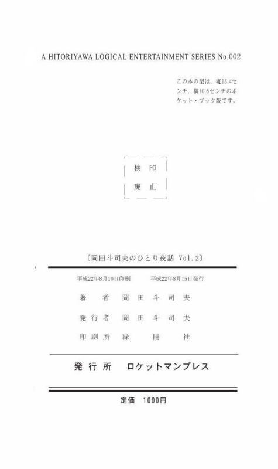

| ｢『ロフト④』岡田斗司夫のひとり夜話 Vol.2｣クダトリノ版002-4 | |
| 岡田斗司夫FREEex | |
| butuzoukoubou Kdatlyno (2013) | |
『岡田斗司夫のひとり夜話 Vol.2 ロフト④』
クダトリノ版002-4
目次
岡田斗司夫のひとり夜話。２００９年最後のひとり夜話になりました。
最後のところで告知もしようと思いますけども、
休憩を挟みまして、三時間やっていこうと思います。
お品書きということはないんですけども、
今日は３ブロックありまして、
えーっと、ちょっと待って、おぅ、見えない。
あらかじめ僕のブログとかで発表してる内容と、
やはり、準備してると微妙にずれてきてしまいまして、
ひとつ目のネタが｢本棚｣で、ふたつ目のネタが｢ゲーム｣。
三つ目のお話が｢ノート術｣という構成になると思いますので、
よろしくお願いします。
今日できなかった話は、質疑応答のところで聞いていただければ、
いいのではないかと思います。
三時間しかないので、バンバンバンバン巻いてやっていこうと思います。
これ、今発売中の｢BRUTUS｣ですね。
｢本が人を作る｣というやつで、
｢BRUTUS｣は毎年、年末になると読書特集というのをやるそうで、
今回は僕も取材されております。
出てるページが、よいしょ。
まぁ、やっぱり｢本棚のダイエット｣とか、
そういうタイトルになっちゃうんですけど、
要するに内容は何かっていうと、
僕ね、今、本棚の本がすごい少ないんですね。
｢BRUTUS｣には一応、１０００冊って書いてます。
いちばん多い時期に僕が本を持ってたのが、
３７０００ぐらいあったはずです。
３７０００が１０００になったので、
｢本棚のダイエット｣というわけなんですけども、
その話をしようかなと思いました。
これが記事で、ここにちょっと、今のですね、
本棚の、わざわざ、間取り図とかもついてるんですけど、
今はこの程度ですね。
わりと広い目の部屋なんですけど、本棚はあまりないです。
ほとんどの本が、この廊下の外側の所にあります。
ここの部分の本が、このコーナーになってるところですね。 この角です。
ここの本は、いわゆるディスプレイ用というか、
写真撮影されるときにかっこいいような感じで、
見せる本棚になってるわけですね。
ここは、上にプラモデルとかが積んである本棚で、
これもいわば｢見せる用｣の本棚なんですよ。
じゃ、この奥のが使ってる本棚かというと、そうではなくて、
ここの奥の本棚はほとんど死蔵してる本なんですね。
つまり、眠ってる本。
普段読んでる本はどこかっていうと、
このＤの部分だけなんですよ。すごい狭い。
たぶん、ここ、３００冊ぐらいしかないんですね。
物書きとしては本当に、僕、本が少ないと思います。
昔から本が少ないからではなくて、
徹底的に減らすことに成功したので
今日はその話からしていこうと思います。よいしょ。
自分の、本棚の歴史っていうのを、まず軽く話しときますね。
小学校から中学校までは、うちの家、たいへん貧乏だったので、
本棚がなかったですね。
本棚どころか自分の部屋がなくて、僕はおばあちゃんと一緒の部屋で、
おばあちゃんと一緒に寝てましたから、自分の部屋はない。
貧乏だから、本もないので、本棚もいらない状態ですね。
姉がある日、急によそよそしくなったんですね。
小学校六年生くらいかな。
今から考えると、ああ、姉ちゃんは生理が来たんだなってわかるんですけども、
その当時、小学校三、四年だった僕には何のことかわからずに、
急に姉ちゃんが冷たくなったもんで、
｢姉ちゃん冷たい、もう遊んでくれない｣とか、
甘えん坊の僕はそういうふうなことを考えてました。
中学校入ったときにも、まだ部屋はもらえなかったんですよ。
貧しくて、家、狭かったですからね。
ところが親がちょっと強気になりまして、
｢斗司夫、中学校の入学祝いに何が欲しい？｣って言われたんですよ。
そのときにちょうど、平凡社から世界百科事典ていうのが出たんですね。
定価１０万円で、全３６巻。
地図が１冊付いて、別冊で索引が１冊付くっていう、全３８巻ですね。
全３８巻の百科事典ですから、本棚ごと売ってるんですよ。
｢１０万円で全３８巻を買った人には本棚プレゼント｣って書いてるくらいで、
本棚付きのそういう商売が昔あったんですよね。
大手の出版社、小学館も講談社も角川書店もそうなんですけど、
戦前戦後大きくなった出版社というのは、
辞書とか百科事典で大儲けしたといわれています。
平凡社もそうですね。
その１０万円の百科事典もすごくヒットしたそうなんですけども、
僕は、小学校から中学校に上がるときに、
｢入学祝いに何がいい？｣と聞かれて、その百科事典って答えたら、
親が買ってくれたんですよね。
自分の部屋がないのに百科事典だけあって、しようがないから、
廊下の端っこを貰って、僕は廊下の端っこに住んで、
家具といえばその百科事典だけっていう、不思議な生活をしてました。
中学校二年くらいのときに初めて自分の小さい部屋を貰って、
中学校三年のときに親の仕事が、どんどんどんどん変化してるんですね。
親が刺繍屋、内職業やってたんですけども、それがうまくいったり、
規模が拡大したりして、近所に家を何軒も借りた。
それは、ミシンを置くための設備として借りたり、
四国の田舎から女の子を連れてきて、そこで働かせたり、
その子たちの寮にしたりということで、住んでたんですけども。
入れ替わりがあるから、けっこう余っちゃうんですね。
で、中学校三年のときに、｢じゃ、斗司夫、もう自分の部屋やる｣っていわれた。
僕は一応ちっちゃい部屋を、三畳ぐらいの部屋だったかな。
もらってたんで、部屋が広くなるのかと思ってたら、
家の向かいに一軒家があったんですけど、
それをまるまるもらっちゃったんですよ。
三畳から一軒家になって、その新しい部屋には風呂もついてるし、
二階建てなんですよ。(会場・笑)
お、うちの家は明らかに狂ってるって思ったのは、
そのときが初めてだったんですけども。
大喜びで、さぁ、これで本棚をずらっと並べてって思うんですけども、
部屋もらったとか家もらった、もらったというか借りてるんですけど、
もらっただけですから、家具もなければ何もないわけですね。
そこに今まで三畳にびっちり入ってた狭いベッドと、
唯一の家具といえるその平凡社の１０万円の百科事典を持ってって、
あとはもう何にもない部屋なんですよ。
ちょうどそのときに、僕、日本刀が好きで好きでしょうがなくて、
モデルガンショップで７０００円で売ってる｢モデル刀｣ってあるじゃないですか、
あれを買ったのが嬉しかったので、部屋の壁に釘をガーンッと打って、
ボーンと置いたんですよ。
だから｢KILL BILL｣に出てくる千葉真一の部屋みたいになっちゃってるんですよね。
(会場・笑)
そこにね、友だちを何度も呼んでるんですけど、
みんな、その刀を見てギョッとして、
岡田は変なヤツに違いないみたいな目で見るんですけども、
別にそういう趣味じゃなかったんです。
部屋ん中で日本刀が素振りできたぐらいですから、
かなり広かったです。
それでも、自分自身のお金もないし、
親も、必要があって借りてるだけだから裕福ではないんですね。
毎月のお小遣いが、中学校に上がってもまだ１０００円行かなかったぐらいですね。
７００円か８００円くらいだったのかな、毎月。
だから、本がまったく増えない状態だったんですよ。
本が増え始めたのは、高校入ってからです。
親の仕事がうまく行くようになって、
税金の対策だと思うんですけれども、
｢資料費とかだったらいくらでも経費で落ちるから、
もう、ここから先、斗司夫、いくら本を買ってもいいぞ｣というふうにいわれて。
それで近所の本屋と契約して、
この子が来たら問答無用でどんな本でも渡してくれっていうふうに(会場・どよめき)
言ってもらったんですよ。
あのとき、俺は本当に、｢なんて良い家に生まれたんだ！｣って思ったんですけども、
この駅前の本屋がすごいちっちゃいんですよ。
この店のね、そこの部分(新宿ロフトプラスワンの入ってすぐ左の狭いスペース)
ぐらいしかないような本屋で、本が、まぁ、ないんだ。
僕は、これでＳＦでもなんでも買えると思ったんですけども、
だいたい３０冊ぐらい買うともう買うものがなくなって、
しようがないから｢パチンコ入門｣とか、
そういうような本ばっか買ってたんですよね。
で、バイト始めて、高校はバイト禁止だったもんで、
親がやっているその工場(こうば)に入ってプレス機をいじって、
油圧プレス機の扱いを高校二年生くらいでほぼ体得したので、
高校二年から三年にかけて、一日中プレス機を、
ガッチャンガッチャンガッチャンガッチャン、
ガッチャンガッチャンガッチャンガッチャンやって、
時給３４０円もらってましたね。
それで、どんどん本が増えはじめました。
同時に、その｢いくらでも注文してもいい｣という近くの本屋で、
伝票注文というのができるのがわかったので、
バイトと伝票注文合わせて、月に１００冊程度買ってたのかな。
そのころは、一日平均２～３冊読んでたと思います。
こうやってると、どんどん本が増えてって、
とうとう大学へ入って、といっても、一浪したんですけども、
浪人してる最中もそのプレス機のバイトを
ガッチャンガッチャンガッチャンガッチャンやって、
勉強なんか全然できなかったので、大阪の三流大学に入ったんですけど。
入ったときに、まぁ、いろんなとこで書いてるんですけど、
蔵書―、持っている本の冊数を数えたら、かなりになってました。
高校三年のときに親が引越しして、それまでの一軒家から、
もう一回ちっちゃい部屋に移ったんですけども、
次に移ったのが、４７㎡ですね。
これ、｢BRUTUS｣の記事でも間違えてたんですよ。
今までずっと、いろんなところで、
｢僕の部屋は４７畳だった｣っていってたんですけども、
こないだ｢あれ？｣って思って計算したら、４７㎡でした。
えらい違いです。
前回も計算違いしたのに、またこれかって思ったでんすけども。
４７畳の部屋はありえないですよね。(会場・笑)
１０メートル×１０メートルの家だったんですよ。
家自体が１００㎡あって、ワンフロア、パァーンとふたつに割って５０㎡。
１０メートル×１０メートルの家だったんですよ。
家自体が１００㎡あって、ワンフロア、パァーンとふたつに割って５０㎡。
そこに廊下とかの共用部分があるから４７㎡だったんですけど、
まぁ、４７のすごい細長い部屋です。
図で描けるかなぁ。
描いてみますんで、ちょっとすいません、こっちの用意をお願いします。
はいはい、こんな部屋です、僕の部屋。
奥行き９メートルで、幅５メートルですね。
ここにドアがありました。
それで、ここにベッドがあるんですよ。
すっごい隅っこにベッドを作ってもらったんですよね。
ここからここまで、ずっと本棚です。
僕はこういうふうに通って、こう行けるわけですけども、
ここの間がちょうど人ひとり入れる。
だからたぶんもう一本ぐらい、本棚があったと思います。
こういう図書館みたいな部屋にしてもらいました。
いやぁ、良かったですよ。
姉の部屋はこの本棚がなくて、部屋のど真ん中にブランコがあるんですよ。
(会場・笑)
姉の部屋はご機嫌な部屋で、ふたりともね、
親からキチガイ部屋って言われてたんですよ。(会場・笑)
別の意味のキチガイっていわれてたんですけど。
僕の部屋はホントに本しかなくて、
１７０００冊の本って案外分量なくて、入れたら、あまったんですね、部屋が。
だからまぁ、そのぐらいの本です。
たぶん、ちょっと大きめの本屋、中くらいの本屋が、
１７０００冊ぐらいだと思います。
僕も、それのおかげで、本屋を見たら、冊数がだいたいわかるんです。
で、部屋の中をずーっと９メートル、いちばん奥まで歩くと自分のベッドに着く。
ここに巨大な、ダイキンの業務用のエアコンがついていて......
業務用のエアコンないと冷えないんですよ。
それで、こいつのスイッチをバーンと入れると、
ここに置いてあるコップの水が凍るんですよね。(会場・笑)
ものすごく寒かったです。
嬉しくて嬉しくて、俺、夏でも毛布掛けて寝てましたもん。(会場・笑)
ここが廊下で、ここが姉ちゃんの部屋ですね。
姉ちゃんのベッド。姉ちゃんのブランコ(会場・笑)ですね。
こんな感じだったんですよ。
だから今後、自分で発言するときは、４７畳っていってたのを
４７㎡に修正しますね。この中で１７０００冊。
大学に入ったときに、１.７万冊あったんですよ。
俺は本が多いほうだろうと思ったら、
大学に入ってＳＦ研に入部したら、
そのＳＦ研の連合サークルがあったんですね。
関西学生ＳＦ研究会連盟(関Ｓ連)というところなんですけど、
関西の六つの大学のＳＦ研のメンバー、
ほぼ１００人ぐらいが集まったんですよ。
１００人から１２０～３０人くらいですよ。
そんなたいした人数じゃない。
１７０００冊で、この４７㎡の部屋いっぱいの本をしている男がそこに行ったら、
絶対勝てると思うじゃないですか。
一年生でこんなにイヤなやつは、
といっても、俺、浪人しましたから１９歳だったんですけど、
俺に勝てるやつはいないだろうと思ってたら、
ベスト３に入れなかったんですよ。
たしか４位か５位だったと思うんです。
上には上がいて。
本当にＳＦ業界っていうのは、本を読むやつが山のようにいたんですね。
こういうところから、僕の、本を持つ生活が始まりました。
結婚して、初めて上本町ってところに家を借りたときには、
普通の、ちっちゃいマンションだったんですけど、
あっという間に本で埋まって、本が入らなくなって。
当時、ゼネラルプロダクツ、
ゼネプロってお店を大阪の桃大で始めたんですけども。
それで倉庫を借りることになったので、そこに自分の本を送って、
まぁ、外部に避難させだしたんですね。
そうやって、家の中に本をあんまり置かないというか、
もう家の中に本が溢れて、どうしようもなかったので、
外に出していたんですけども。
吉祥寺にガイナックスを作ってからは、また本を買いましたね。
作ったのが｢オネアミスの翼 王立宇宙軍｣ていうアニメで、
地球とは別の人類の歴史を、まるまる創らなきゃいけなかったんですね。
他の人類の歴史をまるまる創るということは、
たとえばその、画面に映る登場人物達の民族だけ創りゃいいってもんじゃないんですよ。
この地球上でも、日本の他に、アメリカもあればヨーロッパもあれば、
アジアのいろんな国、ロシアとかがありますよね。
それぞれの国ごとに過去をふりかえったら、
いろんな文化があるじゃないですか。
その国とは別に民族があって、またその民族ごとの文化があると。
で、今の僕らの社会の豊かないろんなものっていうのは、
それらの文化が混ざっているんですね。
たとえば、ここのマイクっていうのはなんでこんな形しているのか。
別に日本特有のものではなくて、アメリカから来た文化と、
日本人がこういう物を作るときのセンスが融合すると、こんな感じになる。
ここんとこのクリップがこういう形になっているのは、
１９２０年代か１９３０年代ぐらいの、
アール・デコっぽいラインがここに入っているからっていう理由があるんです。
理由があるからこそ画面に説得力が、デザインに説得力があるわけですね。
これ(書画カメラ)も、合理的な形でそうなっているんではなくて、
おそらくプラスチックのボディーの射出成形ですね。
この形そのものの合理性と、
中に蛍光灯を入れるからこういう形にならざるを得ないていうのと、
ここのところは、えー、なんだろう。
合理的なデザインていうのはこういうもんだという、
デザイナーのセンスが出てる。
いろんなものが融合して、こういう形になってるわけです。
だから、ひとつの星の歴史をまるまる創るということは、
何種類もの文化を創って、それが今、混合して、
画面にたまたま映っているんですよ、という雰囲気を作らなきゃいけない。
ということで、｢オネアミスの翼｣の文化を創るのはたいへんだったんですよ。
資料も、とりあえず買えるものは買うしかない。
買って買って買って。
それで、アレンジできるものはする。
メインになっているオネアミスっていう国の文化は、
デザインしないといけないんだろうけど、
よその文化はみんながあまり見慣れてないような、
たとえば、ヨーロッパだとしても、
東ヨーロッパのほうのから持ってこよう、とか。
もしくはブラジルとかアルゼンチン、
南アメリカのほうの現代文化から持ってこようとか。
いろんなことを考えて、本を、買って買って買いまくったんですね。
だから、資料がすごい増えた。
それで、やっぱり、ガイナックスのでっかい会社の中にも収まらなくなったんです。
僕、会社の資料と自分の本とは分けてたんです。
自分用に、自宅の近く、歩いて五分くらいのところにアパート借りたんですね。
８畳と６畳のアパートを借りて、そこに本棚をビッチリ入れました。
あいかわらずビッチリです。
どのくらいビッチリかというと、こんな感じの部屋だったんですけど、
押し入れとかを全部外して、本棚ですね。
スライド式の本棚ですね。
ここも、こういうふうに本棚入れて、本棚入れて、入口を入ったら、
もう、えんえん左右が本棚ですね。
アパートの二階だったんですけど、
木造アパートにこんなに本を入れちゃダメですね。
下の部屋から、天井がジワーッと(会場・笑)
歪んで落ちてきたっていわれたんです。
それは大げさでしょうっていったら、｢来て、見ろ｣っていわれて。
行ったら、天井がさわれたんですよ。(会場・笑)
これは怖いと思って、この端っこの本棚を、ずーっと寄せて、
ここにぴったりくっつけるようにしたんです。
そうやって、本を整理しました。
この時代がたぶんいちばん多くて、いわゆる３７０００冊時代ですね。
ガイナックスを辞めて、今まで預けていた本も倉庫から返品されて、
でも、このアパートも結局使わないんですね。
近くにアパートを借りて、
そこに本を置けばいいと思ってる人もいると思うんですけど、
あれはだめです。
歩いて一分であろうと、人間は｢行かない｣ですね。
まだ近所のコンビニのほうが、コンビニって用事があるから行くんですよ。
飲み物を買うとか、いろんな用事で行くから、
コンビニの本って立ち読みするんですけども、
自分のアパートの部屋なんて、カギ持っていって、
暖房とか冷房とかかけて、そこで本を読むかっていったら、
埃っぽくて読めたもんじゃないんですよ、しょっちゅう掃除とかしないかぎり。
そういうわけで、この部屋は二年ぐらい借りてたんですけども、
六回入ってないぐらいですね。
本の出し入れとかに入っただけです。
すごいもったいない使い方しました。
オタキング事務所を吉祥寺に作ると、そこに本をいっぱい置いたんです。
おもちゃも買いはじめたから、
モノであふれてあふれてあふれてしようがなかったですね。
だから、管理方法をいろいろ考えました。
これで見せれると思うんですけども、
これ、オタキング事務所の和室ですね。
和室にある引き出しです。
これ、押入れ用の引き出しですね。
ここに｢雑誌｣とか書いてありますね。
ここに、番号が書いてあるんですよ。
これ、座標番号ですね。
この引き出しを開けると、中に本が入ってる。
こんな風に引き出しを開けると、びっちり本が入ってるんですね、
こんな風に。
タテヨコかまわず、関係なく入ってます。
これ、引き出しを開けた感じですね、こういうふうに見ますね。
こういうふうにびっちり入ってます。
ここに、右の２の１って書いてありますね、これが座標番号です。
これ、(iPhoneの写真で説明)なんだろ。これ、違う。
これ、服のデータベースを今作ろうとしているところ。
あ、これは昨日アスキーの人と行った焼肉の(会場・笑)
焼肉屋のメニューだ。関係ない写真ばっかりですいません。
こんなふうに、引き出しにびっちり入れてるんですよ。
それで、この引き出しが、よいしょ。
こういうふうになってるわけです ね。
キャビネ判の写真に引き伸ばしてるんですよ。
この時代、このシステムを作ったときに、
まだデジカメとかなかったので、写真を上から撮って、
すごくでかいので｢超クソゲー｣と書いてるの、いやですよね。(会場・笑)
ジャンルとか関係なく、サイズで入れてるんです。
このキャビネ判で見て、こういうふうな状態にしたものが
何ページも何ページもあって、
これで検索するようにしてるんですね。
本棚に入れなくても、こうやれば見れるわけですね。
こっちの方が右の１の２ですね。
あ、｢チェス入門｣とかここに、
｢チェス入門｣と｢大阪学｣と、｢合衆国最後の日｣と｢マイロボット｣があるから、
もう、でたらめなんですよ。
こっちの方が１の３だなぁ。
その下は、｢ウルトラリッチ｣｢伝説の大富豪たち｣。
金持ちネタがあるかと思えば、ユング、｢オカルトの心理学｣......
これはなんだろな、｢しゃべるナントカ｣だな。
｢有名人の子供はつらい｣、なんでこんなの買ったんだろ。(会場・笑)
｢戦略爆撃の思想｣｢恐怖の２時間１８分｣、
これはスリーマイル・アイランドのノンフィクションです。
すっごいおもしろいですよ。
こっちは、トンデモ系の本ですね。
ＵＦＯの本とか、｢ようこそアメリカへ｣｢愛してるかいＳＦ｣とかですね。
あ、｢コマダムのススメ｣だ、腹立ったなぁ、この本。
バカゲット、メディアセックスとか、 スティーブン・キングとかですね。
いろんな本が置いてあるんですけど、
サイズで入れてるだけですね、ジャンル分けしてなくて。
こうやって、本を入れていったわけです。
こういう風にしながら、おもちゃもいっぱい買いだしたんですね。
おもちゃは、しょうがないから、データベースを作りました。
おもちゃを片っ端から写真に撮って、ファイルメーカーっていう、
今はマイナーになっちゃったんですけど、
マッキントッシュのやつで管理番号、
これ、上から、何にも考えずについてます。
この｢太陽の塔｣っていうのは、写真に撮ったバイトの子が、
たぶんそれだろうって、いいかげんにつけてる。
僕があとでここにキーワードをどんどんどんどん入れて、分類だけして、
ここの、保管場所っていうところがＤの１０になってますけども、
このＤの１０の引き出しを開けると、こいつが絶対入ってるんですね。
これもおんなじです。
下の方も同じような写真で、こうやって、。
たぶん、６７００点ぐらいあるんですよ、こういうコレクションが。
前、この話を森永卓郎にして、これを見せたら、
ものすっごい欲しがってましたけども(会場・笑)
そんなにむずかしいことじゃないんですよ。
バイトを３人雇ったら、一週間あったら、
たぶん１０万点ぐらいのコレクションでも、
できないことないはずなんですね。
これ、少年雑誌ですね。
同じように、古い少年サンデーとかをいちいち写真でパッと撮って、
その中のキーワードを、僕が気に入ったものとか、おもちゃの広告とかも、
全部こうやって、で、保管場所があるっていう風になってます。
こんな感じで管理してるわけですね、少年キングとかも。
こういう風にやってたんですけども、
ダイエットに成功してから、本棚もスリム化したいなと思いだしたんです。
読まない本、というか、これから先読む気がない本をいつまでも持ってると、
体が重いのと同じように、本棚とか部屋が重いなって思いだしたんですよね。
それと同時に、僕が今すごく大事に思ってて、
とってる本っていうのは、実は文庫版になったり新書版になったりして、
これからも永遠に出つづけるんじゃないかな、と。
そのころamazonが登場して、
古本検索のスーパー源氏っていう検索エンジンも登場したんですね。
amazon書店とスーパー源氏、あとｂｋ１とかのオンライン書店があったら、
いざとなれば、本はもう一回買えるんじゃないかな。
だったら別に持ってなくてもいいんじゃないかなと思いだして、
本を処分しだしました。
実は｢BRUTUS｣の取材でこの話をしたんですけど、
あまりにえげつない話で、一行も使ってもらえなかったのですが(会場・笑)
、これが現在の、僕の、本というものの考え方ですね。
本との出会いと別れ、本を女の人にたとえて、
｢いかにデートして、いかに部屋に連れ込んで、
いかに別れるか｣という流れで説明したんです。
本を、見つける、読む・読まない、買う、持ち帰る、読まない・読む、手放す、
使う、見せる、思い入れ、という風に、
ここに、防衛線とか判断線とか書いてるんですけども、
これを説明してみようと思います。
本棚のスリム化、これは何日か前にブログに書いたんですけども、
蔵書は負債である、という風に考えました。
蔵書っていうのはつまり、今、自分が持ってる本のコレクションですね。
それまでの僕は、蔵書、持ってる本っていうのは財産であって、
大事なもんだって思ってたんですけど、
逆にいえば、その数万冊の本、今でいえば１０００冊程度なんですけど、
その本が、｢いつ読んでくれるの？｣
｢いつ読んでくれるの？｣といってるのに等しいんですよね。
いつか読まなきゃいけない本もあれば、
おもしろかったからもう一回読もうと思ってる本もあるんですけども、
その時間を、自分の人生の残りの中から投資しなきゃいけないって思ったら、
それだけの本をずっと持ってること自体がまるで、
ローンで、利子だけを返してるみたいな気がしちゃったんですね。
本を見て、あぁ読まなきゃ読まなきゃ読まなきゃって思ってる、
この感じ、義務感みたいなものが、
まるで利息だけ払っていて元本が全然減ってない感じに、
すごく似てるなぁと思ったので、
｢そうか、蔵書って今まで財産だと思ってたけど、負債なんだ｣と。
もうお金は払ったから財産になったつもりなんだけど、
本を買うときには半分しか払ってなくて、
いちばん大事でいちばん取り返しがつかない、
｢時間｣というものの支払いが待っていて、
それをこれから払わなきゃいけない。
借金に追われてる状態なんだなぁって思った瞬間に、
｢うわっ、この本の塊がすべて財産じゃなくて、俺の時間借金なんだ｣
と思ったんですよ。
これだけの時間、投資しなきゃいけない本ばかり。
これはまいったなぁと思って、どんどん本を手放しはじめました。
手放す基準は、こうですね。
｢まだ手に入る本｣は捨てる。
｢今売っている本｣はとりあえず捨てる。
捨てるっていうのは、極端な言い方です。
ブックオフに、僕は売ります。
｢いつまでも売ってるような本｣、名作も手放します。
｢読まなければと義務になってる本｣、これも捨てます。
つまり、読まなければ、いつか読もう、読まなきゃと思っている本。
僕は最初、一年持ってる本はもう手放してもいいって考えたんですけども、
一年でも長いですね。
六か月でも長い。
三か月でもまだ長いかもしれない、と考えてます。
雑誌は捨てない。
だいぶ前に、あるコレクターの人から、
雑誌はもう二度と手に入らないから捨てちゃだめだよといわれたんです。
だから雑誌は捨てないようにしてたんですけど、
僕、最近考えが変わってきまして、目次だけデジカメで撮って捨ててます。
目次がいちばん大事なんですよ。
雑誌って目次をデータベースにしてくれれば、いちばん楽なんです。
目次さえわかったら、どうにかして見つかるんですね、雑誌っていうのは。
みなさんも処分するときに、いざとなれば目次を破いて、持っとけばいいです。
破くよりもさらに軽量化したければ、
目次をデジカメで撮るかスキャナで読んじゃうか、ですね。
これが、いちばんつらかったですね。
｢思い出だけの本｣は捨てる。
すごい好きなんだけどもう読まないとか、
すごい好きなんだけど文庫版で売ってるとか、
オンラインで流れているような本、こういうのは｢表紙を撮影して捨てる｣。
アルバムがあれば、思い出せるからです。
結婚式であろうと、デートであろうと、お葬式であろうと、
自分の子どもが生まれた瞬間であろうと何であろうと、
人生のいちばん大事な瞬間とか思い出っていうのは、
実は僕らは写真で持ってるんですよ。
そんなものばっかりですよね。
だから僕らは、アルバムをすごく大事にする。
プリクラで撮った写真とかアルバムが自分の人生で、
いちばん大事なものだっていう人って、いくらでもいるんですね。
そう。写真があれば、僕らは思い出せるんですよ。
その思い出の瞬間をひっぱってくれる。
脳の中から蘇らせてくれるツール、トリガー、カギがあればいいんですね。
本っていうのはマテリアル、物質があるから、
とっとかなきゃいけない気がするんですよ。
同じように、たとえば中学のときの制服とか高校のときの制服とか、
卒業証書とか、ああいうものもマテリアル、物質があるから、
とっとかなきゃいけない。
もしくはとっといた方がいい気がしちゃうんですけども、
すべて写真にした方が、統一されていて整理しやすいのが、
僕、ようやくわかりました。
だから、思い出は写真にして一元管理すれば、ものすごく楽になります。
すべての思い出っていうのを写真にしちゃって、
さっきもいったように、結婚式も子どもの生まれたのも｢写真｣、
これは｢映像｣でもいいんですよ。
同じように、捨てたくない本があれば、写真に撮っちゃえばいいんです。
今回、僕が持ってきたのが、これ。
自分では｢この本は捨てれねぇよ！｣と思ってて、
｢宇宙船ビーグル号の冒険｣がもっと昔に出たバージョンで、
｢宇宙怪獣ゾーン｣っていう、なかなかいい感じのやつですね。
これはわりとおっきい単行本なんですけど、やっぱり捨てれないんですよ。
このほかにも思い入れがあるのは、
アイザック・アシモフの｢銀河帝国興亡史｣が創元推理だった時代の、
｢銀河帝国の興亡｣というタイトルとか、
この青い感じとか手触りとかがすごく好きで、とってるんですね。
中の写真とかも、こんな変な、イラストみたいなものもすごく好きで、
とってるんですけども、これも今になれば簡単に手に入るから、
捨てたり売ったりしてもいいはずなんですけども、やっぱり手放せないですね。
これはハヤカワ・ポケット・ブックス、ハヤカワ・ポケット・ミステリとか
ハヤカワＳＦシリーズっていわれた、背中の色が銀なので、
銀背と呼ばれるＳＦシリーズですね。
今回、僕がコミケで売る同人誌もこれとそっくりのパロディにしてるんです。
真鍋博っていう未来イラストの人が描いた表紙ですけども、
これもやっぱり、本の形とか、マテリアルそのものに思い入れがあるから、
捨てられないんですね。
同じものを売っててもです。
でも、これも、事務所の中が狭くなってきたりして、
もう限界かなと思ったら、手放すようになると思う。
そのときに、僕はこの写真を撮るんですね。
そうやって写真を撮って、手放していこうと思います。
思い出のものから写真に一足飛びに行くのはあまりにもせつないので、
僕はいい方法を思いつきました。
これは近所で売ってる紅茶の缶なんですけど、
本型なので、これに入れてるんですけども、
よいしょ、今の本のミニチュアを作ったんですね。
いいでしょ、これ。(会場・笑)
ほら。こういうところまで一緒に作ってるんですよ。(会場・笑)
これくらいのサイズにして、
いざとれば、本棚の中にさらに小さい本棚を入れて、
このミニサイズの本をびっちり詰めてやろうと思っているんですね。
そこまで好きで、そこまで思い入れがある本だったら、
｢とっておこう｣ではなくて、
自分でミニ本にしたらいいんじゃないかなと思いました。
これも｢ムーミンパパの思い出｣という、すごい好きな本で、
表紙の見返しがかわいいんで、これもこのまま作って、
思わず、しおりも作りました。
これは、さっきの｢宇宙怪獣ゾーン｣ですね。
これもこのサイズになります。
ほら、こんなに縮小できて便利！
これは、こう、カバーがついてて、
カバーの見返しにちょっとイラストがついているんですけども、
中がこういう風になっているので、このまま作ってみました。
すっごい楽しいですよ(会場・笑)
おすすめ！
これも｢恐竜事典｣という巨大な本なんですけど、
こんなに小さくなると、すごい扱いやすい。
これは｢おおきなたまご｣という、
トリケラトプスがアメリカの田舎で生まれちゃう話なんですけど、
箱に入っていたので、ちゃんと箱を再現して、中にしおりも入れます。
これ、さっきのハヤカワ・ポケット・ブックスですね。
こんなサイズにすると、すごいかわいい。
一気にデジタル化できないとか、一気に写真だけで悲しい人は、
その中間段階を作ればいいんじゃないか、
僕、これから、こういう風にやりたいなと思ってるんです。
僕みたいに複雑に、見返しとか表紙とかまで作りにくい場合は、
もっと簡単に、本を開いてカラーコピーして、
適当なサイズの消しゴムにくるっと巻いちゃって、
セロテープで止めるだけで十分です。
僕、それで実験してみましたけど、
それでも、かなりよかったです。
ほら、爪と比較すると、このいい感じがわかるでしょ。
ちゃんとこうなって、読めるんですよ、ぎりぎり。
かわいいので、ぜひみなさんもやってみてください。
思い出っていうのは、縮小して、写真でもいいんですけど、
シンボルの形で持つのがいいんですね。
そのもの自体より、シンボルで。
子どものいちばん最初に履いた靴のミニチュアとか、
ランドセルのミニチュアを作る業者というのがあるんですね。
そうやって小さくしておいたら、
子どもがちっちゃかったころの思い出も保存できるし、
というような業者があるんです。
僕がこれを思いついたのは、そこからなんですけど、
たとえば指輪とか、子どものへその緒でもなんでもいいんですけど、
写真とかみたいに、いつも持ち運べるもので、
デジタル化したり、シンボルになるようなものというのは、
どんどんどんどん小さくして、
いずれは手で持ち運べるものに人生を詰めてしまえれば、
いちばんおもしろいんじゃないかなと思います。
だから僕は、iPhoneのもっとメモリがでかいやつが出てきたら、
中に自分の全部原稿から写真から何からすべて詰めてポケットの中に入れて、
｢俺という人間は、いま歩いている、この個人だけになる｣というのが理想、
すごくおもしろいだろうなって思っているんです。
というわけで、本をどういう風に残すのかを考えはじめたんですけど、
すいません、また、ちょっとお願いします。
これが、｢本との出会いと別れ｣ですね。
僕の考え方で特殊なのは、最後のここに、｢見せる｣というのがあることですね。
本棚のゴールを、みんな、いかに合理的に収容するかとか、
いかに効率よくやるかとか、
いかにいっぱい入れるのかっていう方向に求めるんですけど、
その方法では永遠にゴールは見つからないですよ。
立花隆がすごいですね。
三階建て、四階建ての書庫を作らなきゃいけなかったんですね。
そこにびっちり本を入れる、それでも満足できなかった。
ルーカスフィルムの、スカイウォーカーズランチっていう、
ジョージ・ルーカスが自分で持ってる牧場あって、そこに自宅があるんですね。
自宅と映画スタジオが半分半分になってるやつなんですけども、
そこにジョージ・ルーカス個人の図書室というのがあります。
僕はそこに入ったことがあります。
図書室といっても、それはもう、図書館なんですね。
円形の建物、ドーナツ状建物で、四階建てになっていて、
その円形の建物の内側に、びっちりと本棚がついてるんです。
そこに、本がびっちりと入ってる。
案内してくれた人に、｢ルーカスさんはここに来るんですか？｣
と聞いたんですが、｢いやぁ、それが来れないんですよ｣と。
秘書が何人もいて、本棚をＡＢＣ順や、ジャンルごとに、
しょっちゅう並べ替えたりしてるんですけども、
まぁルーカスさんは年に何回も来ないですね。
本を集めれば集めるほど、
僕の、近くのアパートの本棚とおんなじなんですけど、
自分と縁遠いものになっちゃうんですね。
そして、集めれば集めるほど、雑音が増えていく。
ＳＮ比っていうんでしょうかね。
｢俺はこれが大事なんだっていう本｣と、
｢大事じゃないんだけど読んどきたい本｣と、
｢まだ読んでないからっていう本｣と、
｢いつかは読まないといけないからっていう本｣が、
どんどんどんどん混ざっていってしまう。
そうじゃなくて、作るのは｢自分というものを表現するための本棚｣です。
ここにある、｢見せる本｣っていうのなんですけども、
見せる本棚っていうのをひとつ作って、それを軸にして考えた方が、
本っていうのはうまく扱えるんじゃないかな、と思いました。
まず、本との｢出会いと別れ｣の部分を説明しますね。
｢本の運命｣ですね。
別名｢俺を通り過ぎた本たち｣です。(会場・笑)
出会いがあります。
何かっていうとですね、
本屋かオンライン書店か、古本屋、人からもらう、いろいろあるでしょう。
出会いがあるんですよ。
僕が｢BRUTUS｣の人にいって、バッサリとカットされたのが、これ。
｢本屋はいいですよ。
何がいいかっていうと立ち読みができる。
本っていうのは立ち読みをメインに考えましょう。
買うなんてのは、よっぽど選んだ本にしたほうがいいですよ｣
｢BRUTUS｣の人が、いいました。
｢いやぁ、それ、BRUTUSとしては書きにくいなぁ。
そんな、本屋を敵に回すようなことは、｣
違うんです。
本屋は、立ち読みをいやがるようなことはない。
本屋の敵は、立ち読みをする客じゃなくて、本屋に来ない客です。
amazonとかのオンライン書店で注文しちゃう人たち、
それどころか年末に｢ザ・テレビジョン｣を買うだけの、
一年間に買う本といえば年末の｢ザ・テレビジョン｣だけっていう人いるんですよ。
そういう人が、本屋さんの本来の敵であって、
いくら本をペコペコ折ろうが何をしようが、万引きでない限り、
本屋で立ち読みしてる客っていうのを本当に憎いと思ってる本屋さんて、
あんまりいないんですよね。
本屋に行って本を読む。
買うってこととは違います。
買ったら最後、家にもって帰らなきゃいけない。
俺たちにとって今いちばん大事なのは、家の中の容積じゃないですか。
何立方センチの闘いを僕たちはしてるわけで、
｢うちにはあと３８立方センチしかない｣という風な生き方をしてるわけだから、
軽々しく家に持って帰っちゃいけない。
そういう意味では、ちゃんと本屋さんでお付き合いして、
できるだけ読む。
本を持って帰るってことは、さっきもいったように、
お金を投資して、次に時間を投資しなきゃいけないんですよ。
持って帰って本を読む時間を、みなさん、とれますか？
とれないですよ。
本を読んでる時間があったら、mixiとかツイッターとか、
どうせやるんですよ。(会場・笑)
読んでる時間なんかない。
むかし唐沢俊一さんが凄いことをいってたので、びっくりしたんですけど、
｢本は、買う時間はあっても読む時間がない｣というのがあって、
｢スゲー！｣って。(会 場・笑)
そこまでは僕にはいえないんですけど、だからといって、
家の中に読まない本がどんどんどんどんたまっていくのは、
すごく気持ち悪いんですね。
だから、考えました、
あとで読む時間を作るくらいだったら、本は今この場で読んじまえばいい、
本屋で一日一時間立ち読みする方が、
家で一日一時間本を読む習慣つけるよりずっといいんですよ。
そうしたら、本屋さんで無駄なく読める。
いらない部分はバンバン飛ばして読める。
なんでかっていうと、｢買ってないから｣ですね。
とりあえず見てるだけだから、おもしろそうな部分だけ読めばいいんですよ。
ノンフィクションや、ビジネス書ですね。
僕、自分の本も含めて話してて、｢いいのか？｣と思うんですけど、いいんです。
家で一時間、本を読む時間作るぐらいだったら、
本屋さんで一時間立ち読みしたほうが絶対効率よく頭の中に入ってきます。
そして、それでは物足りないと思ったものだけ、
持って帰るっていう風にしましょう。
これを僕は、｢本屋合コン理論｣と読んでいます。(会場・笑)
本屋には、いろんな出会いがあるんですよ。
いろんな女の子と話して話して話して、｢あ、この子いいな｣と思ったら、
初めてその子をお持ち帰りすればいいんです。
ネット書店が何がいけないかって、あれは出会い系なんですね。(会場・笑)
ネット書店の本は、いいことしか書いてないんですよ。
出会い系で女と会ったら、｢おまえかーっ｣とか
｢何が『ぽっちゃり』だぁ！｣とかいうのはよくある話ですけれども、
amazonで高評価の本っていうのは、
出版社の手先か作者自身が書いたりしてるから、
星４つとか星５つって、全然信用できないんですよ。
たとえば、僕が書いた｢オタクはすでに死んで いる｣という本があります。
これ、賛否両論あります。
賛否両論あるのは僕、よく知っています。
賛否両論ある本っていうのは、
ある程度おもしろくて読みがいがあるからこそ、
｢賛否両論｣という現象が発生するんですね。
ところが、賛否両論あると、
amazonでは、星５つとか４つと１つというのが混ざっちゃうんです。
結果的に、平均値が３に近づいていってしまう。
つまり、賛否両論あるような本は、
amazonでは評価が低い目になっちゃうんです。
それに比べて、誰も読まない本・つまらない本というのは、
作者か、その取り巻きか、出版社の人間が自分で評価を書くから、
評価５が連発してるんですよ。
｢これは評価５が３つあるから、岡田斗司夫の評価３よりもいいんだ｣
と思ったら、とんでもない。
ただ単に、売れてなくてつまんないからかもわかんないです。
ここらあたりもなんかね、出会い系っぽいんですよ。(会場・笑)
amazonとかの本は、届いてから｢じゃあ、これ、いつか読もう｣と封を開けて、
本棚についつい入れちゃう。
これが、やっぱり悪い影響だと僕は思うんですね。
いつか食べるだろうと思って、帰りについついコンビニで何か買っちゃって、
冷蔵庫に入れてしまうと、自分を太りやすくするみたいに、
本棚を太らせてしまうんです。
いや、僕も、amazonはすごい利用してますよ。
一日平均一冊か二冊は買ってるくらいのヘビーユーザーなんですけど、
それでも僕自身は、｢amazonは本の出会い系だ｣と割り切っていて、
本とまじめなお付き合いするんだったら、本屋さんに行って、
意外な出会い、自然な出会い、
｢あっ、本棚で偶然目があったんだよね僕たち｣みたいな出会いの方が、(会場・笑)
いい出会いだと思っているんですよ。
玄関まで本を連れてきます。
玄関に連れてくるところまでに、別れがあるわけですね。
別れとは何かというと、さっき｢BRUTUS｣で見せたとおり、
玄関の本棚には、収容冊数が３００～３５０ぐらいしかないんですよ。
本の総量、容量が決まっているから、
本を一冊買うごとに一冊売らなきゃいけないんですね。
つまり、本を買うということは、どれかと別れるということです。
僕は、週に一回、本棚の一列分は手放すことにしています。
そうやって、新陳代謝させるんですね。
近くの｢読みた屋｣っていう古本屋さんとブックオフで、
この本だったらどちらが高いレートで買ってくれるのか、と調べて、
できるだけ無駄がないようにしてます。
いちばんいいのは、読まない本とか無駄な本は買わないことなんですけど、
それらを買わないっていうのには限界があるんですね。
注意して一日に３０分以上立ち読みをしていても、
やっぱり無駄本は買ってしまうし、
無駄本を買うことをあまり恐れていては読書自体が楽しくなくなっちゃうので、
せめて家からあふれないように。
｢玄関防衛線｣って呼んでるんですけどもね。
ここに書いてあるとおり、本の出会いと別れ、｢見つける｣です。
見つけた本は、本屋さんで、｢読まない｣｢読む｣｢買う｣を決めるんです。
｢読む｣っていうのは、その場で読むことです。
そうするとここで終わって、防衛線は守られる。
｢読まない｣って決めたら、もうこれで終わりです。
｢買う｣、これが持ち帰ることですね。
持ち帰っても、結局読まないことがありますね。
みなさんの家にもあると思うんですけど、
これ、みなさんは｢読まない本｣だと思ってないです。
｢まだ読んでない本｣だと思ってます。
｢まだ読んでない本｣は｢読まない本｣です。
判断線は３０日です。
さんざん試して、僕はこの数値に行きつきました、
いわゆる一日１５００Kcalみたいなもんですね。
人によってちがうと思いますけど、３０日だと思います。
本っていうのは、買った瞬間にいちばん読みたいものなんですよ。
そこから先、読みたいボルテージが下がっていって、
おもしろいことに、栄養と同じなんですね。
やっぱり、トマトを食べたいときは体がトマトを必要としてるんですよ。
すっぱいもの 食べたいときは、すっぱいものを必要としてる。
夜中に仕事したり、むずかしいことを考えたら、
甘いものを脳が要求するように、本屋さんや、
amazonの釣り書きとかで見て、｢あっ、この本を読みたい｣っていうのは、
そのときの精神状態、肉体状態がその本を欲しがってるからであって、
一週間後とか、二週間後に見たら、あまり欲しくなくてあたりまえなんです。
そのことに、罪の意識とかコンプレックスを抱かない方がいい。
だから、持ち帰っても、読まないと決めた本は、
それに関してウジウジ悩んでる分だけ損してると僕は考えます。
だから、これは手放す。
判断線３０日を越えたら、手放すか、使うか、見せるか、思い出かを決めます。
読んでおもしろても、つまらなくても、基本｢手放す｣です。
でないと新しい本が買えないから。
｢使う｣っていうのは、年表とかグルメガイドみたいに本当に使う本です。
｢見せる｣というのは、さっき僕の後ろに置いてあったみたいに、
最終的に自分を表現するための本棚です。
これをちょっと意識してみるといいと思います。
この１００冊とか２００冊で自分を表現するつもりで、
本棚ひとつ、きれいに作ってみましょう。
今までのは、みなさん、分類したり読むための本棚だと思うんです。
服もそうですよね。
これは着れるかなとか、これに合うかなと思ってバラバラの状態で買うんですけど、
最終的に人に見せるときはコーディネートしたり、
こういう風に見てもらいたいなと思って着るじゃないですか。
同じように、自分っていうのは何だろうと表現するつもりで本棚を一個組むと、
他の本棚の意味がすごい変わってきます。
自分の中身を１００パーセント出すには、
この本の隣にこれがなきゃいけないんだっていう、
なんだろうな、ひとつの作品というか、
パッチワークみたいなものを組むつもりで、
見せる本棚っていうのを作ってみてください。
それ以外は｢思い出｣の本なんですから、
まとめて背表紙の写真を撮って手放しちゃうか、
僕みたいにミニチュア化するか、
もしくは、｢思い出の本棚｣っていうのを一本だけ作る。
それは１００冊でも２００冊でもいいです。
思い出の本が一冊増えるたびに、どれかの思い出の本を間引きしていく。
写真に撮るのでも、ミニチュア化するのでもいい。
そうやっていくしかないと思うんですね。
で、本との運命です。
決心して、別れがあります。
古書店にいくか日常品になるか、陳列になるか、アルバム化するか。
こういう流れがいいと思います。
僕はさっき、古本屋に売るときはできるだけ高いところにっていったんですけども、
何のために売るのかというと、場所を確保することと、
あれこれ悩んで無駄な時間を過ごさないためですね。
つまり、高く売るために、あれこれ無駄な時間を過ごすのも、
やっぱりもったいないんですよ。
そんな時間があったら、本を読むために使ってあげた方がいいので、
近所ですませちゃいましょう。
近所の古本屋に売れば、そこははいい古本屋に育ちますから。
古本屋も育てるものなので、自分の本をいつも扱ってくれる古本屋、
いちばん近いところを育てたり、いちばん近所のブックオフとかに流したりします。
できるだけ高い方がもちろんいいんですけど、
本は、１０円でも２０円でも引きとってくれたら儲けものなので、
時間をそんなに投資しないようにした方がいいと思います。
僕、本を買う たびに廊下の本から手放してるんですけど、
手放すときは、未読とか既読とか、読んだことがあるかないか、は、
気にしないですね。
おもしろかったから、また読みたいなっていうのは、
まだいい思い出が残ってる彼女みたいなものです。
未練でもう一回読んでも、たぶん同じ気持にはならないですね。
別れた彼女ともう一回喫茶店で会っても、
なんか、ちょっと、白々しい感じになるだけ、みたいなものです。
残す基準っていうのは、仕事とか遊びに本当に使う日用品の本と、
自分を表現するために置いときたい本ですね。
だから、ジャケットとか背表紙で選んじゃうんでいいんですよ。
そんな本の置き方ありか？ってよく聞かれるんですけど、
これは本の読み方ではなくて、読んだ本を最終的に、
自分を表現する家具として使う方法なので、
背表紙とか表紙のカッコいいものを並べてみてください。
ぼちぼち、ＶＴＲの時間だよね？
文字としての本だけだったら、最終的にデータになっちゃうんですよ。
さっき僕がいったように最終的にこういうものの中に入っちゃって、
読むだけだったら何とでもなる。
マテリアル、物質としての本を持つ意味っていうのは、
本当に｢記念｣しかないと思います。
｢見せる本棚｣っていうのを、まず自分の生活の中心に一個置いてみる。
できるだけ玄関の近くに、３０日以内に判断するための｢保留の本棚｣を置く。
部屋の中は｢使う本棚｣と｢見せる本棚｣だけにしてみると、
一気に読書ライフが豊かになると思います。
少なくとも、読んでない本で溢れた部屋の地代をずっと払っている。
というしんどいことにはならないと思います。
本棚の作り方は、自分の博物館だと考えてみてください。
昔、ミワくんという知り合いがいたんですけども、
彼はライターのコレクションがすごくて、いずれライターの博物館、
自分のコレクションの博物館作りたいんだというので、
僕、｢へぇ｣って思ってたんですけど、みんなそうなんですよ。
自分が生きた証。
たとえば、読んだ本で表すとしたら、
｢俺っていうのはこんな本を読んできた人間なんだ。
こういう本が好きだった人間なんだ｣っていうつもりで作ってみたら、
意外な発見があったり、自分っていうものが発見できたり、
もしくは、自分っていうものを作れたりするチャンスなので、
みなさん、ぜひ一度試してみていただきたいと思いま す。
一回目のワンブロック目、
本棚の話はこういう硬い話でありまして、
次はゲームの話ですね。
やや軟らかい話になりますけれども、
では、テープの交換の間、しばらく休憩します。
え～、すいません。
いや、まだ休憩中なんすけども。
案外、こっからではお客さんの顔が見えないというのは、
まあ照明の都合もあるんですけども、
ここにねぇ、座ってみるとわかるんですけど割と恥ずかしいんですよ。
俺、大学で教えてるんですけども。
もうねぇ、今年で大阪芸術大学５年目だし、
東京大学の時から数えたら１５年ぐらい教えてるんですけど、
まだ教室で学生の顔がまともに見れないですね。
なんだろう。それは恥ずかしいというのもあるんだろうけども。
ビビるというんでもないんでしょうね。
だからもうちょっと、僕の方が、こう何でしょう。
ビビるという言い方でいいんだろうなぁ。
心をもうちょっと開いていくと、もうちょっと視界が、瞳孔が、
今みたいにこうギュッてなってるんじゃなくて、もうちょっと開いてきて、
皆さんの表情とかも見れるんじゃないかなぁとは思うんですけども、
なかなか難しくてですね。
落語家の人にこれを、プロの落語家の人で結構真打の人とかにも、
何回も、何回も、｢あれ、どうやってるんですか？｣って訊いたら、
やっぱり落語家の人もですね、客の顔まともに見れないって言ってましたね。
お客さんの顔を見てまともに話せる落語家は、
そんなの心が壊れてると。
(会場・笑)
｢我々でもやっぱり人の顔見るのが恥ずかしいから、
空中見て話すんだ｣と、それから落語家の視線見たら、
見事にお客さんの頭の上を微妙に見てるんですね。
お客さんと目を合わせない。
時々こう目を合わすのは、技術としてこちらを見て目を合わせて、
で、次はこちらを見てちゃんとアイコンタクトして目を合わせると、
すごく見てる人の集中度が上がるんですね。
だから漫然と見るのではなくて特定の誰かを見て、
次にまた特定の誰かを見てっていう風にやると、
見てる人の集中度が上がる。
その技術としてやっているんであって、実は見てないんだと、
｢あっ、そんなものなのか｣と思いましたけども。
僕もここに来てるお客さんを前回からパートナーという風に言ってるので、
社員やパートナーのことをもうちょっとわかんないと、
｢どうしようもねぇなぁ｣と思ってるんで、
今度ブログでアンケートでも取ろうかなぁと思ってるんですが。
｢皆さんの仕事は何ですか？｣とかですね。
本当にそうなんですよ。
まず仕事がわかんないし、家族構成がわかんないし、
例えば年収とかもわかんないし、月当たりに使えるお小遣いとかもわかんない。
月当たりに使えるお小遣いがわかんないと、
ここでやっているこのイベントの料金とか、
そういう風なもの値段が適切なものかどうかすらわかんないんですね。
月に１回という頻度がいいのか悪いのかすらもわかんなくて、
僕も見当でやってるんで、それよりはもうちょっと分かった方が、
お互いにいいんじゃないのかと思ってそういうアンケートやろうと思ってます。
第二部はですね。
まあ...短いです、３０分くらいですね。ゲームの話をします。
で、ゲームの話ねぇ、、あんまりねぇ。
したくないというのも変ですけども。
大丈夫かなぁ、ちょっとやばいかもわかんないな。
やってみよう！
ゲームに関してね、僕あんまり人前で語ったことがないです。
｢オタク学入門｣でもちょっと書いた程度ですし、
｢ゲームやらないんですか？｣っていう風に学生さんに訊かれた時も、
｢いや俺ゲームやんないから｣っていう風に言ってました。
まあ本当なんですよ、最近はあんまりゲームやらないです。
唯一やるのが『桃太郎電鉄』だけですね。
でも今年はwiiになったのでやらないと決めましたね。
wiiはあるんですけど電源を入れるのも嫌で、
っていうか何かね色々繋がなきゃいけないのがすごく面倒くさくてですね。
NINTENDO６４はなんて素敵なマシンだったんだろうと思ったらですねぇ。
だから６４からこっち、あんまり僕が望んでるような進化をしてくれないので、
どんどんゲーム機からは遠ざかって。
で、一時期は携帯のゲーム機とかも持ってたりしたんですけども、
それでもやっぱあんまり、ＤＳとかを持ってたんですけども、
どんどんやらなくなったんですね、だからあまりゲームやらないと。
まあ、今は自分でも｢ゲームはあまり好きじゃないなぁ｣とか、
｢やってる時間が勿体ないなぁ｣っていう風に、
ハッキリ言えるようになったんですけども、どっかでやらなくなったんですよ。
昔は何かゲームにね、えらハマりだったんですね。
まあ、すごい好きでしたね。
ただ、えらハマりって言ってもですね、何か僕ちょっと違うらしいんですよ。
いや、ゲーム好きな人はみんなこうだと思ってたんですけども、
他の人とはちょっと違うらしいんですよね。
皆さんですね、昔の『マリオ』ありますよね。
一番最初のファミコンの時でも、スーパーファミコンの時でもいい、
『マリオ』でも『スーパーマリオ』でも、なんでもいいんですけども。
『マリオ』怖くなかったですか？
あの落ちるときに、怖いですよね。
あれがすごい怖いんですよ。
終わったらしばらく手が震えて、僕コントローラー持てないんですよ。
で、最後にクッパが出てくるじゃないですか。
話が違いますよね(笑)
俺は、ただ単に陽気なイタリア人が、
まあ怖い亀も出てくるけども踏んだらどうにかなるし、
お金取ってっていう楽しい人生を、あの呑気な音楽と一緒に
｢タタッタータタッタ♪｣って味わってたのに、
なんか地獄みたいな世界に行って、
今までの罪を償えとばかりに亀の大王が出てきて
火の玉投げつけてくるんですよ。
何させられてるのかと思ってですね(笑)
でもやめえようとしても、
もうそれまでに３０分なり１時間なりで
時間使ってるからやめられないじゃないですか。
で、すごい怖いんですよ僕、本当に...。
感情移入も半端じゃないんですね。
『マリオカート』ってあってですね。
僕、ゲームを買ったらすぐに攻略本見ちゃうタイプなんですね。
で『マリオカート』も買ったらすぐにファミコン通信を買って、
｢ヨッシーが一番バランスがいい｣って書いてあるんですよ。
じゃあ俺はヨッシーだと思ってですね。
そしたらもうヨッシーのことが好きで、好きで、好きで、
好きでしょうがなくなってですね。
それまでヨッシーのことを何とも思ってなかったのがですね、
彼のあの｢ブッキュー｣っていう鳴き声とかがですね、やたら愛しくて、。
もうヨッシーかわいいんですよ俺は、
というかヨッシーが可愛いんじゃないんですよ
｢俺はヨッシーだ！｣と思っいて、普段人と話したりする時も、
｢ブッキュー｣って言いたいんですよ。(会場爆笑！)
本当にそのくらい好きなんですよ。
で、そのくらいハマってやるからですね、
それまで僕は自分のことを陽気なイタリア人のマリオだと思ってたのが、
『マリオカート』やりだすとあいつが憎くて憎くてですね。
バナナ投げてくるわですね、やたら卑怯な手を使うわですね、
どうも最高速度も速いような気がするしですね、憎らしいんですよ。
『桃太郎電鉄』もですね、北海道大移動っていうのがあってですね、
何年も前のゲームですね。
その辺を頂点にしてやらなくなったんですね。
何でかっていうとですね、キングボンビーが怖くてしょうがないんですよ。
分かる人いるでしょ？
｢今回はキングボンビーが７種類に増えた｣っていったら、
もうあれより怖いのかと思って。
なんで俺はそんなもの何千円も出して買うんだ、
買わなけりゃそんな怖い目に合わなくて済むんですよ。
買ったら買ったで僕やたらハマるから、
友達から昔｢お前仕事してるのか｣って言われたことがあって(笑)
昔『エアコンバット２』っていうですね。
フライトシミュレーションゲームやってる時にですね、
『エアコンバット２』ってフライトシミュレーションゲームなんですけども。
一応離陸準備から始まって、離陸して敵と戦闘シーンもあるんですけど、
敵と戦闘シーンとかがなくて、護衛するだけとかですね、
仲間の飛行機と一緒に飛ぶだけとかそういうミッションもあるんですね。
護衛する飛行機の所まで２０分くらいかけて飛んでいって、
護衛する飛行機を見つけたら、ちょっと後ろで一緒に飛んで、
その飛行機が無事に着陸するのを見たら、
自分もその後で着陸するというゲームなんですよ。
それを４０分くらいかけてやってたのを
となりで見た澤村君っていうのがいて、
ガイナックスで脱税で捕まった男なんですけども。
彼に｢岡田さん、仕事してんの？全然楽しそうじゃない｣って言われてですね。
｢いや、これがもうすごく楽しいんだ｣って言ったんですけども。
『信長の野望』も、やっぱやってる時には赤井君と
『信長の野望』も戦闘とかがなかったらどんなにいいだろうと。
もう、ずーっと兵隊だけ鍛えられたらどんなに素晴らしいだろう
という風に言ってるぐらい。
なんかね、こう、ゲームの中でもおっきい変化があると、もう怖いんですね。
本当に『桃鉄』もですね、キングボンビーとかですね、
あの貧乏神の巨大なやつとかが出てきてですね
｢お前が持ってる物件を全部吹き飛ばしてやろう｣
って言った瞬間リセットですよもう、本当に怖いから。
怖くて怖くてしょうがなくてですね、
それが理由でゲームが出来ないというのもあったんですよね。
想像力があるっていうのもやっぱりプラスとマイナス があってですね。
スティーブン・キングって、僕のすごい好きな作家がいて、
彼が想像力の持ってるマイナス面について語ってる話で、
僕すごい好きな話なんですけども。
スティーブン・キングってものすごい子煩悩なんですよ。
自分の子供が大好きで大好きでしょうがなくて、
自分の子供だけじゃ足りなくて養子までとってるような、
本当に子供好きな人なんですけども。
彼が言う、現代の代表的なホラー作家であるスティーブン・キングが言う
一番の恐怖は何かっていうと、子供のベッドに近づくと、
子供がベッドの中でいつの間にか冷たくなって死んでるのを発見することだ。
って言ってるんですね。
それぐらい子供のことが好きなんですよ。
で、僕は｢あっ、それ分かるなぁ、｣って思ったんですけども。
やっぱり想像力というのはあり過ぎると、
何かいいことがあっても悪いことを考えちゃうし、
辛いことがあったらそれを何倍にもしちゃうんですよね。
だからスティーブン・キングみたいな人は、その想像力をお金に変える。
それはビートルズにしてもスピルバーグにしても誰でもそうなんですよ、
僕も多分それの端くれだと思います。
自分の想像力とか物を考える力っていうのを、
仕事にしてお金にしたりするのは、
ひょっとしたら、人から見たらいいことみたいに見えるかも分かんないですが。
まあマイケル・ジャクソンもそうですよ。
そうなんですけども、暗黒面というのがあってですね。
絶対に自分の人生は、
そのパワーの強すぎるエンジンに振り回されてるんですよね。
僕程度のエンジンのパワーしかなくてもですね、
｢マリオ｣が怖くて出来なかったり、
｢マリオカート｣やってる時は憎くてしょうがなかったりですね、
そういう弊害があるんですよね。
スティーブン・キングも、もう本当にお金持ちになってですね、
豊かにメーン州の田舎のほうに暮らしてるはずなのに、
それでもやっぱり夜ですね。
ふと起きた時に子供が死んでたらどうしようと思ったら怖くて起きられない。
起きて子供が生きてるかどうか確かめることすら出来ないぐらい怖い。
そういうことがしょっちゅうだったんですね。
そういう想像力の暴走に縛られて生きちゃってるんですね。
それで僕の好きなゲームがありましてね。
『夢幻の心臓』っていうですね。
１９８０年代半ばか後半ぐらいのパソコンゲームのＲＰＧですね。
恐らくこれが『ドラゴンクエスト』の元ネタなんですよ、
フィールドを歩いて、モンスターとかにエンカウントして、
遭遇すると戦闘するというやつなんですけども。
この頃、これでも画面が｢美麗だ！｣って言われたんですから、
｢どんな暗黒時代やったんやー｣って話ですね。
これなんかもう、完全にライン文で書いてますね。
ピュッ、ピュッ、ピュッ、ピュッって線引いて、
一本一本の線をライン文で描いてるようなゲームです。
これ完全に『ドラクエ』なんですよ、ウィンドウが開いて、
だから『ドラクエ』がすごいのは、ファミコンっていうですね、
ものすごいレベルの低いコンピューターで、
これをほぼ再現したところがすごいんですね。
この『夢幻の心臓』が、その『ドラクエ』を先取りして
フィールドを歩いていてモンスターに遭うと、
そこでウィンドウが開いて戦闘シーンが始まります。
で、メッセージ出てくるんですけども、
メッセージがほとんどカタカナと平仮名ですね。
漢字なんか使いません。
これがですね、信じられないけど農夫なんですよ。(会場・笑)
俺、初めて遭った時こいつ絶対モンスターだと思ったんですよね、
鎌持ってるし、表情悪いし。
でもこいつと会話で｢対等に話す｣って出てくるんですけども。
こんなやつと対等に話すのも何だかなと思って対等に話すとカタカナで
｢ドケ！｣って言われてですね、もう悲しいんですよ。
戦闘するとまぁ、モンスターはこういう風に出てくるんですけども、
｢降参する｣とかですね、色んな選択肢があって、
平仮名とカタカナで戦う、こんなゲームなんですね。
このゲームですね、さっきの農民とですね、戦うこともできるんですよ。
で、農民叩いたら、５ポイントくらいのお金を置いてってくれるんですね。
何もすることがない時、いわゆるレベル上げっていう状態なんですけども、
この農夫をどついて、倒して、金を得るぐらいしかないんですよ。
これをやるのが当たり前みたいになってるんですけど
、僕は怖くて怖くて、、なんせ、(農夫の画像を見せる)(会場・笑)
なんか、後で絶対ありそうでしょ？
｢大丈夫かなぁ、武器も持ってないしなぁ｣と思うとこれ、鎌ですよ。
画面の端からね、微妙に切れてるのがイヤな予感するんですよ、
この先どれくらい長いのか分かんないじゃないですか、
で、怖くて怖くてしょうがなかったんですよね。
またねぇ、このメッセージがここの端っこの方に
｢ドケ｣とか｢農民はあなたに危害を加えるつもりはないらしい｣
って書いてある。
｢あなたに危害を加えるつもりはないらしい｣ということは、
｢いずれ、｣って思うんですよ。(会場・笑)
｢あなたの前を通り過ぎて行った｣なんですけども、
時々農民が話したりすることがあるんですね。
その中で、僕、今でも覚えてるセリフで
｢ワガココロハアラハワクニアリ｣というのがあるんですね。
カタカナで全部出てくるから意味が分かんないんですよ
｢ワガココロハ｣、｢私の心は｣、
｢アラハワク｣｢アラハワクっていう所にあり｣
いずれ、このゲームは｢アラハワク｣っていう所に行くのかなと思って。
多分ね、このゲーム僕ね毎日４時間か５時間、３ヶ月やったんですよ。
っていうのは、終わらないゲームなんですねこのゲーム、
いや『ドラクエ』って何が優れてるかって、
俺よく分かったんですけども終わるんですよ。
ゲームにゴールがあるってなんて素晴らしいことだと思ったんだけど、
これは本当に延々と終わらないから、
やろうと思ったらこいつを１００万人倒すこともできるんですよね。
それぐらい、なんか変なゲームだったんですけど。
で｢ワガココロアラハワクニアリ｣ってセリフがあって、
｢何のことなのかなぁ？｣と思ってて。
ある日、ずっと仕事してたらですね、
ガイナックスでもゲーム作ることになって。
ちょうど今、週刊アスキーでそのことを書いてるんですけども。
色んな人を募集したんですね。
そうすると、大学でＳＦ研で一緒にＳＦ大会とかやっていたトミ君っていたんですけども、
トミ君が実はこのゲームのデザイナーだっていうことがわかったんです。
で｢えッー！あの唇ばっかりデカい、なんかあのバカみたいな、
『超人バロム１』好きだって言ってる(会場・笑)
あの頭の悪いトミがあのゲームのデザイナー！？｣って、
俺達の３ヶ月の時間、もう僕だけじゃなくて、
本当に僕の周りみんなやってたんですよ『夢幻の心臓』を。
本当にショックで、俺達はトミのゲームで半年間も振り回されてたのかって。
(会場・笑)
で、間髪入れずトミ君雇って。
もう本当に最初にやったことはトミ君の歓迎会で、
｢アラハワクは何？｣ってきいたんですよ。
そしたら｢いやぁ、別にあそこメモリーが余ったから適当に入れただけです｣
って言われて。(会場・笑)
今でも覚えてるけど、トミ君の首絞めましたからね。
｢バカヤローーーッッ！！｣って言って。
あんだけ俺達を不安にして怖がらせた、
｢ワガココロアラハワクニアリ｣っていうのも、
この農民の顔も、全てメモリーの都合で、
こんな｢ちょっと気味悪い顔になっちゃいましたねー｣って言われて。
俺と赤井君、顔真っ赤にして本当に本気で怒りましたから。
だからね、もうねぇ、皆さんもそうでしょうけど、
こいつはハマりましたよ。
『ドラクエⅡ』ですね。
僕にとっての最高傑作は『ドラクエⅡ』です。
この、後半に行くに連れてゲームバランスの悪さすらも、
もう、愛しい愛しい
まあ｢ああ、夢幻の心臓だなぁ｣という風に思ったんですけど。
その頃はそうも思わなくて
｢あっ、ファミコンでこれができるんだ、すごいなぁ～｣って思ったんですね。
だからもう、このロンダルギア大陸に初めて上陸したときはですね、
目の前に白銀の世界があってですね。
シルバーデビルとかですね、デビルロードがどんどん現れてですね、
つめたいいきとか、ザラキとかですね、
死ぬほどメガンテとかやるじゃないですか。
もう怖くて怖くて。
本当に目の前に白銀の大地が見えたんですよ。
｢いやぁ、すごいゲームだなぁ！｣と思って。
だから、その時は僕、真夏だったんだけどエアコンゆるめてやりました。
本当に寒く感じたから。
それぐらい『ドラクエ』好きでしたね。
で、この地図。
当時ファミコンについてた解説書についてたすごい小っちゃい地図ありましたね。
それを僕は拡大コピーを何回も、何回も、何回も繰り返して、
１メートル×２メートルのこの巨大な地図を作って、部屋の壁に貼って、
毎日毎日行ったところをピン押して、毛糸でこうルートを作っていったんですね。
それを、後に知り合いになったエニックスの、
千田さんっていうプロデューサーに言ったら、
｢あなたは間違いなく日本で一番『ドラクエ２』を楽しんだ｣って言われて、
ちょっと嬉しかったんですけれども。
でも、僕は楽しんだつもりはなくて、
えらいもう本当にさっき言ったように想像力の全てを使って
その世界に入ってしまったんで、本当に戻ってくるの大変だったんですよ。
だからゲーム終わるの辛かったですね。
だからNINTENDO６４好きだっていうのは、
この６４の『マリオ』の画面のですね、３Ｄの画面ですね。
これがもう本当に、自分がその中にいる気にさせてくれるんで。
『マリオ６４』やった後、僕しばらく、
どの他のゲームもやらずに毎日『マリオ６４』やってましたね。
それも、やるだけじゃなくて、何か散歩してるような感じ。
吉祥寺の街を散歩するとか、お気に入りの街を散歩するように
『マリオ６４』の中を色々散歩して、特にコインを取らずに、
鎖につながれてる鉄の球みたいなのが｢ワン！ワン！ワン！｣って来る
と｢今日もお前は咆えてるねぇ｣っていう、
近所の悪い犬を見るような目線で、
こうやって中をうろうろ、うろうろ歩いてる。
それくらい、ゲームにハマるやつなんですね。
それがですね。
じゃあ何でいつから俺こんなにゲーム好きでゲームハマったのに、
やんなくなったのかなぁと思ったら。
ちょうど、１０年ぐらい前の夏にですね。
『どこでもいっしょ』っていうゲームが出たんですよ。
やった人多いと思うんですけども。
まぁプレステのゲームですね。
『どこでもいっしょ』っていうのはゲームの中のキャラクターで
ネコとかロボットとか色んなのがいるんですよ。
で、僕が選んだのは｢トロ｣っていう有名なネコですね。
有名なネコがいて、それがあの自分のところへ居候みたいにして来るという。
トロの部屋というのを一部屋与えてあげて、
その中で物が増えたりするっていうですね、不思議なゲームなんですね。
で、トロは人間の 言葉を覚えたがってる。
何でかっていうと、人間の言葉を覚えれば覚えるほど、
人間になれると彼は信じてるからなんですね。
まあゲームの中のやつだし、まあかわいいやつだし、
所詮ネコだからってことで、色々言葉を教えてあげるんですよ。
で、人によって色んな楽しみ方があって、
エッチな言葉ばっかり教えるとかですね、数学用語ばっかり教えるとかですね、
阪神タイガースの選手の名前しか教えないとかですね、
色んな楽しみ方があったそうですね。
僕は適当にそれをシャッフルして、
ある日は急にエッチな言葉ばっかり教えてですね、
トロがしゃべる言葉は全て、学研の｢スコラ｣とかですね、
｢デラべっぴん｣とかそんなんばっかりになった時もあったんですけども。
で、何でも知りたがろうとして色々聞いて来るので、
そんなにね楽しかったとか、そんなにハマったかっていうとそうでもないですね。
友達とか、知り合いとか、あとパソコン通信とかで、
こういうこと教えるとこんな風に言う時があるという風なことを聞いて、
それを教えたりして、本当にライトユーザーの楽しみ方をしてましたね。
いわゆる『ドラクエ』とかですね、
さっき言った『夢幻の心臓』みたいな大ハマりはしなかったんです。
それでも、後半になってきてですね、トロと親しくなった頃にですね、
有名な別れっていうやつが来るんですね。
トロってね、まあ皆さんも知ってると思うんですけども、
この｢どこでもいっしょ｣というゲームは終わりがあるんですね。
後に続編は出てるんですけど。
僕もそういう風なことを、その頃全く思わずにビックリしたんですよね。
｢あ、別れるんだぁ｣と、噂には聞いてたけど。
ある日トロが、人間になれる方法があるっていう噂を聞いたから僕は旅に出るって、
｢斗司夫と別れるのは寂しいけど旅に出るよ｣って言うんですね。
その時にすごいドキィッ！として。
今まで俺はこいつが人間になりたいから言葉教えてって言ってたから、
まあネコだしなぁ、人間になりたいからって、
いや言葉教えても人間にはなれないよなぁ、
大体お前ゲームじゃんっていう風に思ってて、
まあ言葉教えたり色々からかってたりしたんですけども。
その時に、本気でこいつがどんだけ人間になりたいのかっていう風に考えて、
さっき言ったゲームの中に引き込まれるスイッチが、
パチーン！て入っちゃったんですよね。
それで、グワーっと入っちゃって
｢うわぁー、トロもう行くのか、もう会えないのか、｣と思ったら、
さすがにねぇもうそん時には４０歳越えてたので、
当たり前だけど泣くことはないわけですね。
それでも何か心の中にじんわりとした感動が広がって、
｢うわぁ、すっげぇゲーム作ったなぁ｣と思ったんですよね。
でも、そのゲーム終わった後でも、
ゲームのスイッチしばらく切らなかったんですよ。
というのは噂でゲームのスイッチ切らなかったら
何日かしたらトロが帰ってくることがあるとか、
時々帰ってきて｢帰ってきたよ、でも斗司夫がいなかったから、
また行ったにゃ｣とかいう書置きが置いてあるとかですね、
色んな噂が流れてたんですね。
僕はそれを本当かどうか分からないから確かめようもないので
スイッチずっと入れっぱなしにしてたんです。
それで、時々見ていた、
別に他にすごくしたいゲームがあったわけじゃない程度の理由なんですけど
スイッチ入れっぱなしにして、何日かしてからまた見たりしてたんですよね。
で、やっぱりトロいないな、トロいないな、
でも時々トロから絵葉書みたいなものが来て、
ここに行ったぞ、ここに行ったぞと、
人間になるためには東に行けばいいと聞いた。北に行けばいいと聞いた。
っていうのを見てると、なんとなくその、
心の中に寂しいなぁとかそういう風な、不思議な気持ちが広がってきたんですね。
その後も他のゲームしてるときにメモリーカードの中に
｢どこでもいっしょ｣が入ってるとやっぱそれをつい開いちゃって
｢やっぱトロ帰ってきてないなー｣とかって思ったり。
まあ、それはそれでいいんだと思ってたんですね、
ゲームっていうのはそういう風なもんだしね。
だからその後ね、続編出たり、あとトロの商品が出たりしたら
すごい複雑な気分だったんですよね。
｢あれっ？俺のトロってあそこで別れたんじゃないのか｣と思ったら、
次のゲームでは帰ってきたとかですね、そんなこと言われてそれでいいのかな？
何かせっかく感動した心が何かちょっと違うような気がしちゃうなー
という風にその時は思ってたんですよ。
いや、ところがですね、人生どこに落とし穴があるか分かんないですね。
娘がいるんですけど、そのときはまだ娘と一緒に暮らしてたんですよね。
その当時ちょ うど１０歳だったんですよ。
１０歳っていうと、もういい加減世の中の本当のこととかが、
ちらちら分かってくる。
ゲームも、ゲームだってちゃんと分かってるんですけども。
『どこでもいっしょ』やってるんですね。
『どこでもいっしょ』やってるぞ、泣くぞー、と思って見てたんですよ。
これは１０歳であのラストシーンやらされたら、
パパでも危なかったからなーと思って。(会場・笑)
見てたらね、普通にやってるんですよ。
で｢ああ、うん、『どこでもいっしょ』有名だからねー｣とか言って、
１０歳の娘がやってるんです。
｢そんなもんかー｣と思って見てたらですね、
そしたらどうも一通りクリアしたらしいんですね。
で、｢トロどうしたのー？｣ってきいたら、
｢家出しちゃった、出て行っちゃった｣って、
｢あー、お父さんも前やった時出て行ったよ｣って言って、
｢お父さん、そのメモリーカードまだ持ってる？｣っていうから、
｢いや、もうない｣って言ったら｢あ、そう｣とか言うんですね。
それで話が終わったと思ってたんですよ。
そしたら、ある日ね。
もう本当にね、そんな話をしてから何週間も経った頃なんですけども、
夜中、明け方近く、目が覚めて、リビング行ったらですね、
娘がリビングで寝てるんですね。
で、普段そんなことする子じゃないから、
なんでリビングで寝てるんだろうと。
リビングでマンガが置きっ放しになってるんですよ。
マンガとかお菓子が置いてあるから｢しょうがないなー｣と思って、
テレビ画面を見たらですね。
｢どこでもいっしょ｣の誰もいない部屋が映ったままになってたんですよ。
｢えーっ！？｣って思って。
その瞬間に頭の中でカタカタって分かったんですけども。
｢あー、そうか、この子トロ待ってたんだ｣って分かったんですよ。
ビックリして、なんでも親に言う子だったんですよ。
子供の頃から、そういう自分の感情的なこと、
寂しかったこととか、辛かったこととか、何か自慢したいこととか、
なんでも親に言う子だったんですけども、
さすがにそれは言えなかったみたいで。
｢どこでもいっしょ｣が終わって、
トロが帰ってくるのを待ってて、
いつ帰ってくるか分からないから、
ずっと画面見てるわけにはいかないからずっとマンガ読んでる。
でも自分はマンガ読んでるつもりなんだけども、
画面はつけっ放しになっていて。
いつ帰ってきても大丈夫なように、帰ってきた時に、
また｢キミがいないから出て行ったよ｣っていう風に、
書置きを置かれたりしないようにってやってる。
この子はそれまで、これを何日間やったんだろうなっと思って。
、、、、、、、、、、、、、この日からゲーム、出来なくなっちゃった。
すっごいね、なんとも言えない感じになったんですよね。
もちろんね、娘１０歳だからこれがゲームだと分かってるんですよ。
多分、僕らもそうだと思うんですね、
ゲームやってて、本気になったり、暑くなったり、マリオ死んだときに悔しかったり、
僕みたいに怖くなったりする人もいるでしょうけども、
熱くなるっていうのはゲームだと分かってても、
どっか、心がこう、ガーッと動いてるんですけども。
それはね、大人の僕たちだったら耐えられるんですけども。
本当の世界と夢の世界との狭間にいるような子供がそういうとこにハマっていって。
ゲームだと分かっているからこそ、そのことを親にも言えない、
相談もできない、友達にも言えない。
ただ自分に出来るのは、夜中待つだけだっていうのを、
知った時にすっごい、切なくなっちゃって、...。
で、何かね｢ゲームってけしからんな！｣と思って。
いや、けしからんなってこともないんですけども。
その日からね、なんかゲーム出来なくなりました。
｢なんでゲームをしないんですか｣とか
｢面白いですよ｣とかって言われることはよくあるし、
『巨人のドシン』っていうゲームが出たときに、
これ絶対面白いなーと思って買ったし、
『リモートコントロールダンディ』とかも買って結構ハマったんですけども。
ただ心のどっかに、その『どこでもいっしょ』のことが引っかかっちゃって。
さっき言ったスティーブン・キングと同じ効果ですね。
普通の人よりも余分にある想像力が、
今さっき言った娘のこととかをすごい加速させるんですよ。
それで、この間これ思い出して、思い切って娘に、
もう２０歳なんですけども、聞いてみたら、
覚えてなかったんですよ。(場内爆笑！)
パパの涙は～(笑)
てことですけど。
それでもやっぱりね、トラウマになっちゃって。
未だになんかちょっと、本気でゲームにはハマれないというそれだけのお話でした。
ちょっとクリスマスですからこういう話もしたくなりました。
えー、それではですね、１０分間ぐらい休憩して、
３番目のノートの話したいと思います。
お疲れ様。 (場内拍手)
ほい、始めます。
楽屋に編集の人が来ていて話したんですけども、
ひとりは｢いや～、僕分かりますよ｣って、
もう４０いくつも過ぎてる人なんですけど、
｢僕もトロで号泣しました。｣ってトロで号泣するとカミングアウトする編集者(笑)
｢あれはね、最後の日の前の晩、
明日は大事な話があるから早く帰ってきてくれと言われるじゃないですか｣って、
｢あッ！言われるぅッ～｣と思って、
で、｢俺はその日、打ち合わせがいくつもあったけど、
全部ブッチぎって帰りましたよ｣って(会場大爆笑！)
すげ～編集者だなぁと思って、
打ち合わせを全部ブッチぎって家へ帰って、
トロと別れをしてキッチリ泣いたそうです。
もうひとり編集の人がいて、その人は｢あ～そうですね、
ゲーセンでトロのぬいぐるみ取るのにいくら使ったか分かりませんね～｣
って言うからムチャクチャ腹が立って、
｢俺はああいうトロのぬいぐるみすら、
もう見れないぐらいつらいんだよーッ！｣と、
｢違うッッ！｣って(笑)
まあまあオッサンのそういうカミングアウトは置いとくとして。
後半最後のネタはノートの話です。
ノートの話っていうのは前回もしたし、
あと奈良でも講演でもやったんですけども。
自分の中で、徐々に、徐々に人に説明する形が完成しつつあるので、
すいません、途中段階をいろいろ、いろいろ説明しながら話したいと思います。
奈良でイベントをやったんですね。
その時にノートの取り方を説明しました。
そのノートの取り方っていうのは、
前回僕がここのイベントに説明したように、
普段僕がやってるノートの付け方なんですね。
つまり、一日一見開きで考えてる事を書く、
で、右のページにはわりと論理的な事を、そういう風に注意して書いて、
左のページはそれに対するイラストとか図解とかを書くという説明して、
それでやってもらった人が何人もいるんですよ。
それで、イベントで聞いてやった人もいるし、
その人達のブログを見て｢やってみました｣って報告もあるんですけども、
効果はあるんですよ、もの凄く効果はあるんですけども、
ただしこれは強過ぎてですねだいたい普通の人間は、
３日から４日が限度なんですね。
３、４日やる、皆さんもやってみたら分かるんですけども、
多分２日目、３日目には｢うわッ～、岡田斗司夫ノート術凄い！｣と、
｢考えてる事を右側に書いて、あったことや考えてる事を右側に書いて、
それを展開していって左側にそれの図解とか連想した事とかを、
チャッチャッと書くだけでこんなに頭の中からいろいろ出てくるのか｣
と思うんです。
でも４、５日経つと凄いしんどくなるんですね、
重たくなるっていうかですね、出てこなくなる。
で、｢あれッ、あんなに楽しくて凄かったのが｣
と思ってみんな３日坊主で終わっちゃうんですよ。
これ当たり前でですね、僕が今やってる事説明しちゃうと、
これかなりの応用編なんですね、だからもっと基礎から説明をします。
レコーディングダイエットで助走っていう段階を言ってるんですけども、
助走とか離陸っていうただ単に食べてるもの書くだけでいいんですよ。
という段階から始めて行って、
徐々に徐々にハードル上げていかないとですね。
しょっぱなからきつい事を言ったら、
それはよそにあるダイエット法と同じなんですね。
普通のダイエット法っていうのは、食事管理をこのようにして、
運動こういう風にして、日常生活でこうやって栄養バランス気をつけて、
っていう風にハードルがやたら高いんです。
でも一つ一つを聞いてると出来そうな気がするから、
全部まとめて出来そうな気がしちゃうんですね。
で一つ一つは簡単なんですけども、
全部まとめて出来たら人間苦労しないんですよ。
それが出来れば、この世の中に太ってる人はいるはずがなくて、
僕らの意思というのは自分が思ってるよりも何十倍も弱いし、
僕らの普段の生活の習慣っていうのは、
僕らが思ってる以上ッ～に！強いんですよ。
だから、そんな普段と変わってる事は続けて出来ない、
やるのは凄く難しい。
そのためにレコーディングダイエットっていうのは、
一番最初はもう何にも我慢しなくていいから、
今までと全く同じ食事をして、
ただ単にその食事をメモするだけしてくれっていう風に言ってるんです。
でもこれですら、やっぱりハードルが高いと感じる人がいるぐらいなんですね。
ただレコーディングダイエットというのは、
そういう助走とか離陸っていう段階を持ってきて、
徐々にハードルを上げてるから、
わりと成功率が高い方法だっていう風に僕は考えているんですね。
だからそんな風にですね、この自分のノート術も分解してみました。
まず、みんながやり易いように考えなきゃなと思って、
みんながやり易いようにというですね。
上から目線で考えてきたんですけども、
ちょっと待てよ？と、｢俺はどうしてたっけ？｣って思ってですね。
過去のノートを掘り返して見たんですね。
そうするとですね自分のやってきた道が、結構ね時代ごとに違うんですね。
それでこれがですね、僕のノートの歴史です。(メモを見せる)
メモの内容
１.メモなし
２.メモ(スケジュール帳)
３.システム手帳(ミッションステートメント等)
４.ガイナ退社前後(カウンセリングがわり)
５.なんでも書く
６.大きさ、色、素材いろいろ
７.Ｂ５ノートに統一
一番最初はですね、メモとか取るの大嫌いだったので、
メモとか全然取らなかったんですよ。
それがスケジュール帳にメモを取るようになって、
システム手帳にはまってですね。
よくあるミッションステートメントとかですね。
人生の中期目標、長期目標とか一年以内の目標とか、
もう真面目に、真面目にあんなのを全部やってたんですけども、
まあ、なんかやっぱり一週間や二週間しか持たないですね。
で、ガイナックスを退社前後は、自分のノートに悩み書いたりとか、
カウンセリング代わりに使ってたんですね。
そのあとに何でも書くって言う段階になって、
大きさ、色、素材、いろいろやるようになって、
最終的には今のＢ５に統一したという流れですね。
僕の中でも、実はこういう風になってるんです。
ただ僕の中では迷って、迷って、迷って最後にＢ５に行き着いたから、
皆さんに｢ノート術でこういうのがありますよ｣という時は、
このＢ５のノートを最初から言うのが一番いいだろうと思ったんすけども、
なんか違うんですね。
なので今日は、それを出来るだけ正確にやってみようと思います。
一番最初はですね、ノートつけてないですね。
もう全部頭で覚えているんですよね。
頭で覚えただけでやろうとする人は多いんですけども、
やっぱり無理があります。
で、次にノートを付け出しました。
例えば、これ１９８６年のノートですね。
今からもう２３年前ですか、こういう縦長のノートです。
なんでこんな縦長かっていうと、
こういう風に一週間分で一見開きのノートだったからです。
まあ内容はですね。こういう風にですね。
これガイナックスを作る頃ですね。
動画用紙を２千枚発注して、鉛筆はＢと２Ｂを６ダースづつ買って、
色鉛筆は赤とオレンジと黄色が要ると、目玉クリップは２ダース必要で、
イスと大阪用のスタジオでトレス台が要るぞとかいう風に、
こういう事が延々書いてあるんすね。
これは、自分が挨拶したあとバンダイの社長がスピーチがあって、
乾杯があるぞ、そのあと解散だぞっていう風に書いてあるんですね。
こっち方は、もうスケジュール帳ですね。
背景の川上君と会ったり、
新阪急ホテルでゲートウェイアーチの吉田さんと会うとか、
どんな人か全然覚えて無いんですけど。
これはまあ赤字で困ったということですね。
こっちは、ちょっとブログにも書いたんですけど、
｢スパイラルゾーンを作らないか｣と言われた時にですね。
バンダイ制作のアニメとしてガイナックスはメイン契約して、
社外的には、トンカーっていう会社を、
海外の会社をかませるかも分かんないとか、
ガイナックス義務は質的パートをやって、
Ｖ８０という会社が制作パートをやるっていう、
まあＶ８０の下請けに入れって事ですね。
で、アメリカに対してはバンダイが責任負うとかいろんな条件が決まってきて、
バンダイの提案は維持費として月２００万出そう、
ガイナックスの維持費を出しましょうと言ってきたんですけど、
維持費出すから専属契約しろ。と言う事ですね。
ここで井上さんが提案してきたのが、
｢スパイラル五本ガイナックスが製作して一本あたり、
１０００万から１０００万ぐらい、原画料は秒１２００百円見当だ｣
という話を、こんな話を俺いちいちメモしてたんですね。
こちらを見るとですね、｢来年の仕事コンセプト、
映像をやるだったらビデオじゃイヤ、テレビがいい｣とかですね。
｢この仕事の為に力を使いきってはいけない｣
スパイラルゾーンがよっぽど嫌だったんですね。(会場爆笑！)
｢王立で得たモノは手放してはいけない｣とかですね。
｢対象は中学生以上でないと、分かんないから出来ない｣とか書いてる。
よっぽどこの頃幼児用アニメやれと言われたんですね。
こんなヤマトのガレージキットで、
｢ヤマト復活計画をやらないか｣っていう風に言われたりですね。
スパイラル用にガイナックス社内に欲しいスタッフで、
鈴木さんが動画チェックで欲しいとか、
王立の動画メンバーは動画そのまま、
美術スタッフは美術、原画スタッフは原画そのままとか、
そういうことがいちいち書いてあります。
英文プレスシートですね、王立宇宙軍をアメリカでやってる時のやつで、
｢坂本用の軍服見積もり｣
これ坂本龍一にオネアミスの世界でデザインした軍服を着せて、
写真撮ろうとしたら坂本龍一に即座に嫌って言われたんですよね。
で、東宝東亜の会議、
オーバー・ザ・トップ２月２１日よりで同時公開の話ってやつですね。
オーバー・ザ・トップと同時公開、スタローン映画ですよ。
嫌だな～と思ってこの話は幸いにして流れたんすけど、
東宝東亜よりタイトル変更要求とかですね。
この頃からいろいろもめてた訳ですね。
こういう風な事を書いていたのが、
一番最初の初期の段階ですね。
こんな感じで一週間で一見開きですね。
これの次にですねシステム手帳時代っていうのがあるんですけど、
システム手帳時代の資料は持ってきてないですね。
というのは見ても面白くないんです。
要するにバラバラになってるから、
今のやつにみたいに一覧でバンッて書いてないんですよ。
もっと皆さんに見せる面白いのは無いのかなと思ったらですね。ありました。
さっきのが８６年でしたよね、８４年が見つかりました。
よっぽど張り切ってたんでしょうね。
｢バリバリプロデューサーのアニメ日記｣というですね。
(会場大爆笑！！！)
まあ、当時は私もですね、若かったもんですからですね。
こういう風なものを書きたかった気分なんですよ。
でこれ二つのノートが合体してて、多分あの表紙が取れちゃったんですね。
こっちのノートは何かって言うと、
これ分かりますか？
ボイス、ミイラ、コウモリ、タートナック赤、青、タートナック、
じいさんがいる、ミイラ、コウモリ、ボイス、...何か分かる人？
はい、いいですよ声出して！
(お客さん)『ゼルダ』のマップ！
『ゼルダ』のマップその通りです！
同時にゼルダを凄く熱心にやってたんですね。
だからバリバリプロデューサーではないですね。
バリバリゲーマーだったかもわかんないですね(笑)
でこのゼルダのマップが延々続くんですよ。(会場笑い)
かと思うとここには復活の呪文ですよ。
これは何かっていうと、これは『ドラクエⅡ』なんですね。
さっき話した『ドラクエⅡ』でバリアワープとかですね。
すごい、よく、俺これを取ってたなぁと感心するんですけども、
凄い細かくあった事とかですね。
ロトの鎧は雪の不動の人の手に、
雪の子は自分店の裏の木に埋めたとかですね、いちいち書いてるんですね。
で、復活の呪文がいちいち、いちいちレベルごとに整理してあるんですね。
マップも見開きで作ろうとしてますね。
これが、壁にデッカイの貼ってたって言ったんですけども、
一応それのハンディ版ですね。
こういう風に、
ゲームをやってたのとほぼ同時のバリバリプロデューサーのアニメ日記(笑)
説得力ないなぁ～。
で、これは何か、アニメスタジオを作るという話から始めて、
さてこういう企画が有ると話す企画書、アニメに対する内的不安材料、
予算、スタッフ、期間、大儲けとか書いてあります。
アニメというのはべらぼうに金が掛かる。
DAICONフィルムにそんな金が有るのか、
アニメに対してっていうことですから。
これ８４年ですから、何かっていうとですね。
実はDAICONが終わった直後でガイナックス設立前夜なんですよね。
前夜っていうか、何ヶ月か前に東京に行ってアニメを作ろうという話です。
｢なんで２年近くかかるの？
オープニングアニメでも１ヶ月ちょっとで作れたのに、
１年以上も一つの作品に関わる意味があるのか？
どんなストーリーか？どんな見せ場か？メリットは？｣ っていうのをイチイチ、
DAICONフィルム当時のアマチュアの仲間達に説明する為の、
論理的根拠っていうのをメモしてるんです。
で、説得には企画書が必要だとかザーっと書いてますね。
｢必要なものはガイナの資産調査｣とかですね。
｢俺達はいくらぐらい金持ってるのか？
東京のスタジオは質的向上の為には、
内的スタッフを他の企画に使う事が出来る｣っと、
アドバイザーとして、宇宙軍の井上氏と、
あとで大喧嘩するとは知らずにこういう風に書いてますね。
当初の原動画がスタジオ演出までに６００万程度要調査と書いてありますが、
全然嘘でしたね６００万で済むわけがねぇんだよ。
残りの２０００万に関してはバンダイより出資って、
全部で４億かかったよ。(会場笑い)
なんちゅう甘い見積もりだと思って、
｢何故プロになるのか？なんでアマチュアではいけないのか？｣
この時にようやっと、架空の世界の人類初の宇宙飛行士の伝記であるっていうのと、
王立宇宙軍というタイトルが、ようやくこの辺りで生まれてきます。
で、｢何故プロになりたいのか？スタジオの形式は？｣とか、
｢ストーリーは２１歳高卒で王立宇宙軍中佐で恋人無し、
ガールフレンド不明、現代っ子である｣とか書いてある。
こちら側の方には原画は１０人、
作監は一人貞本、庵野秀明君、前田真尋君って書いてあってですね。
このメンバーは月７万保障で一カット２０００円、
第二メンバーは月１５万保障で一カットは払わない、
第三メンバーは一カット４０００円だっていう風に書いてあります。
こういう風に凄い細かく書いてる。
これがそのスケジュール帳とほぼ同時期にやってたことですね。
つまり、考えてる事とか、思いついた事とか、
人と話した事、決めた事は、こういう風に普通のノートにドンドン書いて、
で日記みたいなものとか、備忘録みたいなものっていうか、
まあスケジュール的なものだけは、
スケジュール帳に書くというのをやってたんですね。
ところが、この２冊のノートやってると、
次第にスケジュール帳使わなくなってきたんです。
全て一つのノートで代用するようになってきた。
で、一つのノートで書くようになったというのがですね。
９５年１月からですね。
これかなり分厚いノートですから３年分くらい入っています。
わりと分厚い目のノートでしたね、凄い重かったのを覚えてます。
でこの時からようやっと日付を書くようになってますね。
こういう風にダッーっとヒエラルキーとか書くようになって、
これは９５年の５月１１日ですね。
マクルーハンに注目って書いてあって、
｢物質の成り立ちは壊れにくい原子や分子
ギッチリと隙間なく詰まっているのではない。
これが固体のイメージだが本当にそうなのか？
原子とは原子核とその回りに確率的に存在する電子であり、
それは言わば仮想的な中心である、
重力との力の関係で構成されたネットワークであると、
エネルギーベクトルとベクトル平衡体これがバランスを保ちながら、
固体、液体、気体に変化させる｣というですね。
この頃から俺は変だったんですね。(会場笑い)
つまり、前回話した物質というのは根本的に物には中心というのが無くて、
関係と力しかないんだと、
寄せ合う力と引き合う力と回転するひねりくらいしかないんだというのは、
実は９５年のこの時から考え出したというのが、今になれば分かるんですね。
それで自然には中身なんて存在しない、全て原子の運動パターンだけであって、
その力の接点、イベントと関係、ベクトルを我々は見てるだけだっていう、
これが洗脳社会２に繋がる話なんすけど、これをこの時に発見してる。
つまりこの時にはもう、
９５年にはこういう風にノートに何でも書くようになっています。
途中段階ではですね。いろんな方法を試していてですね。
例えばスケッチブックに書い たときもあったんですね。
ただ単にスケッチブックです。
ホントに紙だったらなんでもいいと、
無くさないように名前書いてるんですけど、中学生みたいですよね。
これは、例えば赤井君に、俺は一体何が出来るんだろうとインタビューしてみた。
期待感を煽る能力が有る。
そこそこの企画力が有る。
決断力が有るけど意思が弱い。
カンが悪くて研究熱心。
信条に正直。
コンセプトに忠実。
自分を物としてみる。
人にプレゼンされ易い期待感がある。
クリエイターの言語がしゃべれる。
そこそこの行動力がある。
というですね、もの凄く正直な事を言ってくれたんです。
で、この期待感を煽る能力というのは、
磁場発するっていう様な事を言ってましたね。
こういう風にですね、その他に自分の欠点とかをダッーと書いてる。
嫉妬深い。
ワガママである。
気が弱い。
寂しがり。
面倒くさがり。
謝るのが下手である。
他人にいい顔してもらいたくて安請け合いをして後で苦しむ。
とかですね。
治ってないッ！
まあ治らなくてもいいんですけど、
こういう風なノートをつけています。
その他にでもですね、いろいろと試しています。
一時期はカードに書いてた事も有ります。
これはオズっていう『遺言』で話したガイナックスの、
パソコンゲームのアイディアだったんですけども、
こういう風に魔法使いの目的とかですね。
魔法使いの目的の中に常温核融合というのがありますね。
永久機関、不老不死、賢者の石、異次元生物との交流、
悪魔と契約の中に常温核融合というのがあるのが、
まあ、ちょっとＳＦですね。
魔法の大系は何かっていうと、
呪文、四元素は遺伝子のＡ、Ｃ、Ｇ、Ｔに対応。
この頃からこういうの好きだったんですね。
韻を踏むっていう風に書いてありますね。
場のエネルギー、それ自体には方向性が無い。
これに対してコード入力を行うっていうやつで、
ただし人間の考える物や魔法には、恐ろしくバグが多くて、
魔法使いの多くはこのデバッグに細心の注意を払う。
場から生じた力はE=MCの二乗の割合で働くが、
その場合、場の霊力が薄れる・
霊的等高線というものがこの世界には存在して、
ファイ螺旋によって動くとかですね。
訳の分からん事を書いてますけども、
こういうのをカードで書いてた時代も有ります。
つまり、ノートじゃなくてカード化した方が、
自分のアイディアっていうのを持ち運びやすいかなと思ったんですけど、
カードは使いにくかったです。
なんでかっていうと、バラバラになっちゃって、
順番とか入れ替えれるもんだから、
どの順番で考えたのか分からなくなっちゃうんですね。
だからあんまりオススメ出来ないですね。
それで、さっきも言ったように現在のノートの付け方はこんな感じですね。
右ページに考えや論理を書いて、
左ページは図解とか、連想とか、ダジャレとか、
決めフレーズを書くっていうやつで、
考え方としては右ページは｢考える｣なんですよ。
左ページを｢面白くする｣なんですね。
これがなかなかポイントなんですけども、これをゆっくり説明します。
現在はですね。毎日２ページ何でも書くという方法に落ち着きまして、
基本的に右ページは論理的にしっかり考えて、
左ページは面白くするっていう風に、割り切るというかですね。
役割を決めて書いてます。
で、右ページの左上に日付を書くんですね。
僕のノートの特徴っていうのは、
つまり、横書きですから左から右に進行するんで、
普通は左ページの左上に日付書いて、
左ページの上から右ページの下へ書くんですよ。
さっきのこのノートもそうですよね。
左上に日付を書いてあるから、左ページから書いて、
右ページに書いていくのが普通のノートの使い方なんですよ。
これはジブリのハーモニーの人で引き抜きの話をしたのが、
後に樋口伸二君の奥さんになった人ですね。
人に歴史ありだのぉ～。
左ページの上に日付を書いてあって右へ流れるのが普通なんすけども、
僕の書き方はこれが逆でですね。
右ページの上に書くんですね、これは途中から発見した方法だったんすけど、
最初はスパイラル用紙だったから、右ページだったら書きやすいけど、
左ページだったら、真ん中の止め具に手が当たって痛いじゃないですか。
それが嫌だから、ただ単に右ページにだけ書いてたのが、
ある時から右ページに普段メモを取って、
書ききれない事を左ページに書くようになったんですね。
そうすると実は右半分と左半分で意味が違ってくるのが分かった。
多分人間の頭というのはそういう風に出来てるんですね。
何かの右半分と左半分って意味が違うんです。
これを積極的に使おうと思って、
次からは敢えて右ページに日付を書いて、まず右ページに書いて、
で、それでも足りなかった溢れる事は左ページに書く。
だから右ページに書いたら続きを、
左ページに書くっていう変な事やってたんですけど、
しだいに右ページに論理的な事を書いて、
左ページに連想的な事を書く。
いわゆる右脳左脳みたいな使い分けしたんですね。
そうすると右脳左脳みたいなものが、
紙の上で一目瞭然に分かるっていう、メリットがあるんですね。
それでそういう書き方をするようになった。
なんでこういう事をするのかっていうとですね。
僕なりにですね昔から自分のノートを付けてて、
自分に起こった変化がですね、やっぱりいくつかありました。
で、書いてみたらですね１０個ありました。
もう、この辺プレゼンですね。
ノートによる変化です。
１.やりたい事がやれる。
２.悩まない。
３.ストレスが無い。
４.人前で話せる。
５.ケンカしない。
６.いつも楽しく、退屈しない。
７.文章が書ける。
８.アイディアに不自由しない。
９.面白いと言われる。
１０.アプローチが自由自在。
基本的にやりたい事しかやらなくなりましたね。
さっきみたいな事を、ずっとメモしてるとやりたくない事は、
自分がメモ取らないのがわかってきましたね。
人の話を聞いても、あんまり聞きたくない話はメモ取らないし、
熱心にやらない仕事の話とかメモしてもしょうがないので取らなくなりました。
悩まなくもなりました。
悩まなくなるというのは、何かっていうと、
悩むのはノートにおまかせするようになったんですね。
つまり、悩むっていうのは同じ問題をグルグル、グルグルと何回も考えて、
また前と同じ事を考えてるっていうのがよくあるんですけども、
それはもうノートに移し換えてしまう。
ノートに伝染させるんですね。
いわゆる風邪を人にうつして治すみたいなもんで、
悩みをノートにうつしちゃって自分は、治療しちゃうって考え方ですね。
悩むのはノートが考えりゃいいんだ。
ノートに書いた瞬間に俺の責任は無いんだぐらいに決めて、
ノートに書くと悩まなくなりました。
あと、ストレスも無いです。
基本的に日常的に、なんかストレスがあってしんどいなと思ったら、
その瞬間ノートに書いて後はノートが解決してくれると信じて、
僕ノート閉じちゃうんですよ。
そしたら面白い事に、解決できる事は解決するし、
ノートに書いて解決しないような事は人間には無理なんすよ。
だからそれは２年、３年待ってて様子を見るしかない。
あとね。意外かも分かんないすけど人前で話せるようになる。
前は僕、人前で話せなかったんですよね。
ガイナックス時代とかは一対一とか三対三ぐらいで、
クリエイターの人と話すのは凄い得意だったので、
昔からおしゃべりはできると思ってたんですけども、
こういう講演とかですね、大学の授業とかはもの凄いダメで、
ほんとにレジュメを山ほど用意して上から読む、
棒読みしか出来なかったんですね。
で、ほんのちょっと受けたり受けなかったりしただけで、
心が動揺してちょっとでもリアクションが無かったら、
なんか急に逃げたくなったりとかですね。
凄い心が弱かったんですけども、
人前でこういう風にダッーっと話が出来るようになりました。
それはなんでかっていうと、あとで説明しますけども、
頭の中にストックがあるようになったからですね。
どういう風にしゃべるのかっていう。
あとケンカをしなくなりました。
僕はいまだにいろんな人とケンカしてるから、
岡田さんケンカしてるじゃないかと思うかもしれませんが、
２０代の僕はこんなもんじゃ無かったです。
さっき出てきた赤井君の表現によると、
｢岡田さんは原子力です｣と言ったんですよ。
｢人類としては、原子力の平和利用が夢だけども、
今の所一番使いやすいのは核爆弾です｣と、
だから、｢岡田さんも、打ち合わせを破壊したい時には、
もの凄く役に立つんだけども、
いつかはボイラー沸かしてクルクル回って電気を起こして、
僕達の生活を豊かにしてください。
ただしその時は岡田さんは遠くに住んでください｣って言われてですね。
うまい事いうなぁ～と。
それくらいケンカッぱやかったりですね。拗ねたりが凄かったんですね。
あとですね。
ノート書き出してから僕は基本的に楽しくて退屈しなくなりましたね。
この２０年ぐらい一回も退屈ってした事が無くて、
退屈する人の気持よく分かんないです。
それが昔からそうかというと、
そうじゃなくてノート書くのが自分のペースになってからですね。
毎日付けてるのかというと、そうではないんですけど。
あとですね、文章かけるようになった。
これもね、意外かも分かりませんけども、
僕ね。昔は文章書けなかったんですよね。
｢ぼくたち洗脳社会｣というののあとがきで書いたんですけど、
その当時は奥さんに書いてもらったんですよ。
僕がこういう風にしゃべって、それをまとめてもらったんすけども、
今はそんなことやってないですね。
ブログとかも、自分でダッーっと書いてますし、
あとこういう文章、人前でしゃべったものをまとめる時っていうのは、
テープで取ってライターさんの方にそれをテープ起こしっていって、
日本語にしてもらって、自分の方でバッーと直すっていう手法とってます。
なので文章が平気で書けるようになって、
その文章のリズムとかも取れるようになった。
これもやっぱノート付けてたおかげですね。
あと、アイディアにも不自由しないですね。
これは何か聞かれた時にすぐ思いついたり、
あとすぐ思いつくっていうんじゃないですけども、
３つ、４つ同時に思いつくようになります。
で、まあ面白いって言われるようになります。
これはもう平均値が高くなります。
だから、どれくらい面白くなるかっていったら、
それはノート付けた日数と熱心さに比例するとしか、
言いようが無いんですけども、少なくとも付け出す前より、
１年くらい付けたら面白くなります。
それで、この面白くなるっていうのが、
僕のノート術の特殊な売りじゃないかなと思いますね。
他のノート術というのは、頭がよくなるとか、仕事が出来るようになるとか、
効率がよくなるとか、お金が儲かるって言うんですけども、
そこは僕は人間の本質的な欲求ではないと思います。
それは途中段階であって、その結果面白くなって、面白いと人に言われて、
なんかニコニコ出来るっていうのがゴールではないのかと思う。
そっちの方の効果が高いです。
あと、アプローチが自由自在っていうのは、
一つや二つダメだった時でも、
じゃあこうしよう、ああしようというですね。
代案とか出すのが凄いてっとり早くなったし、
いけるかダメかの判断も早くなりましたね。
こういうノートによる変化が有るので、
まあ皆さんは是非ノートを付けてくださいというですね。
多分、次回はやらないと思うんですけど、２月とか４月くらいに、
もう一回また｢じゃあこういう風にも考えてるよ｣
というプレゼンやると思います。
それで、他のノート術との違いっていうのはですね。
よく産業的自己実現って言ってるんですけども、
効率悪いと思うんですよね。
例えば、レバレッジ勉強術っていう本書いてる人がいて、
僕は会ったこと無いからあんまり悪口とかいうのもなんなんですけども。
あの人の事よく分かんなくて、
｢１年の半分はハワイにいます｣って言ってるんですけども、
１年の半分ハワイにいるっていうのがよく分かんない。
なんでかっていうとその人の本を読んだら、
仕事はこんな風に具体的にしろ、
ノートはこんな風にしろとか、
読書はこんな風にしろって、
いうようにスッゴイ具体的に細かく書いてるんですよ。
役に立ちます。
でも、スッゴイ具体的に書いてるんですけども、
じゃあそうやって肝心の稼いだお金で何をしてるのか？
１年の半分ハワイで家族と楽しく暮らしてますという、
その楽しく家族で暮らしてる事が全く具体的じゃないんですね。
わかった、お前楽しくないんだなって、
楽しい専門家の俺は一発で見抜きましたよ。
お前にあるのは金だけだな、よーしわかったよと、
もしお前が毎日楽しかったら、俺みたいにどうやって楽しいのか。
絶対に人に言わないと気がすまないはずだと、
だってお前こうやって仕事を効率化するっていうのが
自慢したくて本を書いてるんだから、
ハワイの生活が楽しかったら、もう｢抜群ハワイ術｣とか、
｢レバレッジ１０倍ハワイ術｣って書いてるはずなんですよ。
絶対に彼は楽しくないんですね、あ～なるほどなと。
だからワークライフバランスという言葉も、
僕あんまり好きじゃないのはワークとライフのバランスを取った末に、
プライベートはどうやって充実させるのかが一切書いてないんですね。
つまり｢プライベートはあなた任せ｣って言ってるんですけども、
そこまでして仕事効率的を切り詰めてですねお金稼いで、
じゃあ時間が余った、金が余った。
でも何がやりたいのか分かんないんですね。
そういうアンパンマンに怒られるような、
｢なにをしてよろこぶ、わからないままおわる、そんなのはいやだ｣
って言う風にですね、毎週やなせたかしに怒られるような、
そんな生き方いかんと思うのですよね。
なので、これが僕のモノを考える時にテーマです。
頭は工場じゃないです、効率よくアウトプットしちゃだめです。
よく効率よくインプットして、効率よく読書して、
さっきも読書術みたいな事言いましたけども、
誤解して欲しくないのは効率よく読書して、
というのは考えてもしょうがないんですね。
そうじゃなくて楽しい事だけをしろと、
あの時言ったつもりなんですね。
つまり、本屋さんで立ち読みしたら、
自分の面白いところだけ読めるから、
それでいいんだよって、でいらない本を買って、
いらない義務感を覚えて、家に帰ってまだ読んでない罪悪感を覚えて、
そんなことを考えて人生無駄にしてもしょうがないって言いたかっただけで、
効率的な速読術とかそういうような事、
僕は全く考えてないし興味ないです。
頭は工場じゃないので、効率よくアウトプットをしてはいけない。
それはなんでかって言うと、早く痩せようと同じなんです。
早く痩せようとしたら１週間や２週間効果は出るんですけども、
僕が奈良で皆さんにお伝えした、凄い上級者編のノート術と同じで、
３、４日であっという間に体がバテちゃうんですね。
だから凄いハードなダイエットも、
１週間、２週間は効果が出て凄い体重が痩せる。
ビリーズ・ブートキャンプもそうなんすよ。
凄い効果あるんですけどもそんな続けられないんですね。
で、頭っていうのは基本的に農地であって、自然であるんですよ。
でアイディアとか思いつく事ってのは作物なんですね。
いい土壌を作って、いい肥料をあげてって天気がよけりゃあ、
いい作物が実る事もあるんですよ。
僕らは、このいい作物が実る確率を上げることしか出来ないんですね。
出来るだけ畑の面積を広くして、いい畑にして、太陽の日照りなんか良くして、
いい肥料あげるようにして、雑草抜いてって日ごろのメンテしか出来ない。
そうして、そういうのをずっと続けてたら、
ドンドンいい作物が出来るようになる。
そんときにじゃあ農夫のおじさん、百姓のおじさんは、
｢凄いですね、おじさん｣と言われたら、
｢いや～大地が頑張ってくれたから｣っていう風に言うんですね。
僕も同じですよ、まあ｢岡田さん、なんか凄いですね｣と言われても、
僕が言えるのは｢いや、ノート付けてるからですよ｣と、
俺が偉いんじゃなくてノートが偉いんですって僕ハッキリいえますね。
なので頭は工場じゃなくて、工夫とかですね、仕組みとか、
仕切りであんまりどうにかなるもんじゃないです。
もしどうにかなったとしてもそれは短期的なもので、
長期的には農場だと考えた方が、
皆さん自身の体ににも負担かけないと思います。
で、毎日頭を耕したり、世話をするっていうのは、
どういう風にするのかというのを具体的に話しましょう。
やっとこの話が出来た。
まずですね、助走です。
ノート術の第一段階、週に２ページで結構です。
あった事を書くだけ、名詞と動詞で書きます。
見開き一週間、サンプルを持ってきました。
サンプル用にね６００円のノート買ったよ。
こういう見開きで一週間ですね。
で、ほんと言えば右側に日付ごとに書いて、
こっち左側を自由に使えるノートが欲しいんですけども、
そんなノートさんざん探したけども売ってなかったです。
なので、こういう使い方です。
これ１２月２８日のところなんですけども、
やった事を名詞と動詞で書く、で左側は好きな事を書くです。
右側は例えば、｢アメトーーク見た｣｢親子丼食べた｣
｢岡田と電話した｣｢ガンプラの右ひざ作った｣
次の日は、｢メガウェンディーズを食べる｣、｢リアルの３から５巻を読んだ｣、
他の日は｢年末買出しに行く｣、｢アバターを見る｣、｢紅白見る｣、
｢mixiに日記書く｣と書くんですね。
で、左側はそれに関しては考えた事です｢ひな壇芸人無理｣とか、
｢品川嫌い｣とかですね、これはメガウェンディーズの感想ですね。
｢パン、レタス、トマト、ミート、 パン、美味いィィッ！！ソースがッ！！｣
左ページは出来る だけくだらない事を書きましょう。
これはアバター見た感想です、｢ガックし、キャメロンすげーよ｣
これでいいです。
｢人ごみ嫌い｣とかでもいいです。
紅白見た感想です。｢パフューム終わった｣、
「mixiの感想」、｢日記に一時間もかかった｣こんなんでいいんですよ。
で、これで一見開きです、１週間で２ページわかりますね。
こんだけの面積が１日分です、だから４個か５個しか書けないです。
あった事を名詞と動詞で何々をしたとか、
何々を食べた、何々を作った、誰それと話した、
誰それと飲みに行ったっていう風に、
それを名詞と動詞でひたすら書くだけ、
それの感想とかが、もしあったら左側の書く、感想でなくてもいいです。
誰かが気に入ったフレーズ言ったりした、
もしくはなんか約束した事とかそういう事を忘れないように、
メモするのでもかまいません。
目標は、この２ページを一週間で埋めてみるです。
だから遡って埋めるのでも結構です。
前に戻って｢あっ、今週もう終わっちゃう。
木曜日何したっけ、水曜日何したっけ｣って思いだして書くのでもけっこうです。
なんとか埋める程度を目標にする。
で、これもね埋めなきゃダメという事はないでんすよ。
埋めるのを目標にするですから、埋められなくてもいい。
これが助走です。
見開き２ページで一週間ですね、あった事を見開きで書いて、
右ページの方にあった事を具体的に名詞と動詞で書く、
左ページはそれぞれの話題とか感想、反省とかですね出来栄えとかですね。
料理作った人はどうだったかというのを書いてみてください。
次です。
第二段階、離陸です。
離陸もまだ同じノートを使います。
だから第一段階のノートはかなり小さくても結構ですよ。
僕みたいなＢ５のノート使ってもいいですし、
ちっちゃいノート買ってもいいです。
第二段階です、ちょっと変わります全く同じ事をしながら、
あった事に採点してください。
これがカロリー計算になるわけですね。
こうなります。
｢アメトーク見る、３点｣｢親子丼ランチに食べる、４点｣
｢岡田と電話する、１点｣｢ガンプラ左脛、３点｣
ちょっと進みましたね。
｢てりやきマック食べる、２点｣
先週ウェンディーズ食べたから今週はてりやきマック食べたんですね。
｢リアル六巻から九巻読む、５点｣
進みましたね、５段階評価です。
で、｢ヤマト見る、１点｣(笑)
｢Mixi書く、４点｣｢ツイッター始める、２点｣っていう風にですね。
５段階採点してください。
注意点は最低でもゼロです、マイナスはなしです。
どんな最悪な事をやっても覚えていてそれを書くときは０点にしてください。
これがもう下限。
というのは経験っていうのは、
ネガティブに考えたらいくらでも考えられるんです。
楽しかった事ってのは最高点で５段階って言ったら、
５までしかつけないんですけども、
人間というのは嫌な事があったら、
マイナス１０とかマイナス２０とか書いてしまうんですね。
そんな事をやっても意味が無い。
最低でも人間の心ってのは０ですから０でかまいません。
それで、良くも悪くもなかったなと思ったら２か３でやっといて、
で｢ああ、面白かった、楽しかったな｣と思ったら４とか５をつける。
これ何かって言うとですね、自分の心の中に起きた楽しさとか、
やりがいとか、評価ですね。
さっき言ったプラモデルだったら、どれぐらい楽しかったのかとか、
自分でどれくらい出来栄えに満足したのかという、
自分の心の動きを基準にして評価点数つけてやってください。
この点数も合計したりしなくてもいいです。
ほんと言えば、僕は｢これの基本点が上がれば上がるほど毎日楽しいですよ｣
とかって言いたいんですけども、そんなことしても多分無駄なんですね。
そんなことしたら点をつけるのが自分だから、
カロリーみたいな絶対的なもんじゃなくて、
点をつけるのが自分だからご機嫌な日は全部５で書いちゃうんですよ。
なんかブルーな日は全部１で書いちゃうんですよ。
それを見て一喜一憂してもしょうがない。
肝心なのは何かというと、
あった事を名詞と動詞で書いて点を付けるという癖をつける。
するとどういうことが起きるのかというと、
全くその事に関して考えなくても、
自然に１とか２のことはやらなくなってきます。
よくスケジュール術とかではですね、
こうやって無駄な時間省こうって言うんですけども、
スケジュール術で無駄な時間を省くよりは、
１点とか２点のことをやらないようにした方が実は楽しいんです。
僕らが楽しいと自分で思い込んでる。
つまり美味しいと思いこんでるカロリーがいっぱいあるものを避けて、
美味しくてカロリーの高いもの、
もしくは美味しくてカロリーが低いものを食べるようにしたら、
自然と痩せるようにですね。
楽しいと思い込んでたんだけども、
実は点付けたら何故かいつも２点や３点の事があったら、
そういうことを人間というのはごく自然にやらなくなるんですね。
この方法で、自分があとで考えたらあまり楽しくなかった事は、
事前に避けるようになっていく癖がつきます。
これが離陸の目的です。
あった事に採点、０点から５点まで、
マイナスはなし、楽しさ、やりがい、評価で採点します。
ここの段階まではどんなサイズのノートでも結構です。
その次の段階がですね、助走、離陸ときたら、
レコーディングダイエットでいうとこの上昇ですね。
次の段階に入ります。
レコーディングダイエットの上昇というのは、
いよいよカロリー制限をして具体的に痩せだすんですけども、
こっからが本番です。
ここまでのすね、まあ実はずぅ～っとこの助走と離陸だけでもですね。
十分人生楽しくなるんですけども、
まだそれではあなたの人生、私の人生が楽しくなるだけで、
まわりの人から面白いとねとか、楽しいねとか言われないし、
まわりの人を幸せに出来ないので、その次の段階に移ります。
ここでようやっと毎日２ページです。
どの段階で上昇に行くかって言うとですね。
１週間２ページで収まらなくなったらです。
毎日書くことがいっぱいあって、
左側のページも、あの１週間メモでは収まりきらなくなったよ。
いっぱい書くことあっちゃうよという風に思って毎日、
まあ毎日じゃなくてもいいんですけど、２、３週間のうち半分くらい、
週に半分とかぐらいが溢れてくるようになったら、
そろそろノートを大きくしてみましょう。
不安な人は一日２ページじゃなくて、二日で２ページでもかまわないし、
これをさらに４つに分解して、
４ページで一週間、つまり一週間で二見開きですね。
前の倍のペースにしてもかまいません。
それで、そうやって右ページに論理、
左ページに面白と書いたんですがこういう構造に注意します。
これをもう少し細かく説明しますね。
これザッと先に概念を言いますけども、
この上昇の段階になると毎日の採点は必要ないです。
毎日イチイチあった事を書かなくても、
毎日考えた事とか、思った事を書くだけでかまわないです。
で、右ページはですね。
論理基礎っていうんですけども、
考える癖をつけるのが、この上昇段階の目的で、
左ページは面白基礎ですね、連想したり話を広げる癖をつける。
この段階からノートは出来るだけ２４時間持ち歩いてください。
一週間で一見開きのノートは、あとで思い出して書くのもありだから、
家に置いておいても構わないんですよ。
あとで思い出して書くので全然かまわない。
その日の夜書いても構わない、次の日の朝書いても構わないですけども、
この上昇段階からは出来るだけ持って歩いてください。
僕は自分のノートはできるだけ持ち歩いてます。
それで、この右ページの論理。
論理で書くというのは難しいんですけども、コツはですね。
僕が知ってる限り論理的にものを考えるコツってのは３つしかないです。
論理とは何か？
なにかについてを考えますよね。
その考えた事に関して下と上と水平この３つで考えます。
下とい うのは掘り下げるです。
なんでだろう？なんでだろう？なんでだろう？っていう風に、
じゃあそれは何で、何で、何でって考えていきます。
例えば何か一つ問題がある。
今の、仕分け問題でもいいです、政治の予算の仕分け問題でもいいです。
何でだろうって思う、なんか気になる事があったら、
なんでそうなっちゃうんだろう？なんでそうなっちゃうんだろう？
なんでそうなっちゃうんだろう？
という風に当たり外れは気にしなくていいです。
自分だけの考えを書く、ネットで正解を調べなくてもいいです、
むしろ調べない方がいい。
これは演習問題であって正解が目的ではないです。
言っちゃえばランニングとかですね、
素振りとかと同じ様なものでやってるうちにフォームが綺麗になります。
間違った考え方というのは人間には無いですから、
その人なりの論理の組み方を演習する。
後半いう面白くなるというのは人と違った論理大系を身につける事であって、
正しい論理は別に面白くないんですよ。
僕が言ってるみたいなデタラメな事が、
実は面白さの基本にあるので、どれくらい論理的で、
どれくらいズレてるのかというのを、
人間が保持する事が最終的な面白さの構築に繋がるのでですね。
正解を考えなくていいです。
論理的と正解は違います、頭が変な人は例外なく論理的ですから、
皆さんわかりますよね頭おかしい人って、
もの凄い理屈っぽくしゃべるじゃないですか。
クレーマーの人とか例外なく論理的なんですよ。
なので、あってる必要はないです。
ただ単に何でだろう？何でだろう？何でだろう？
で、出来れば最終段階で何故私はそれが気になるんだろう？
という自分に対するツッコミを入れといてください。
これが論理の１です。
何でだろう？何でだろう？何でだろう？
これ勝間和代さん何故を５回繰り返すって言ってるんですけども、
それが５回なのかどうかは僕分からないです。
ただ単に僕はこのブランチですね。
この枝が三回は伸びないと気持ちが悪いです。
こういう風に考えてます。
次は上です。
上に構築する。
という事は、どうなる？どうする？っていう風に考えます。
ほら、困った事があったらどうしようって考えちゃうじゃないですか。
みんなこの上の構築を考えるじゃないですか。
上の構築考えても下の方の地盤がゆるゆるだったら、
すぐに決心とか考えて揺らいじゃうんですよ。
借金を返さなきゃいけない、どうしよう？どうしよう？どうしよう？
どっかから借りようか？どうしよう？どうしよう？どうしよう？
って考えてると地盤がユルユルなんですね。
何で借金を返さなきゃいけないんだろう？
ホントに返さなきゃいけないのかな？
なんで借金したんだろうっていう風に、
今そんな事考えてる場合じゃないって思うかもわかんないんすけども、
地盤がゆるゆるだったら同じ事をグルグル考えちゃう。
人間の最大の苦痛は同じ事をグルグル考えて疲れることです。
これ以上疲れること僕知らないです。
それを僕、ガイナックス辞めた当たりの時に２年ぐらい味わって、
｢ああ、地獄っていうのはこういう感じ｣って思うくらいしんどかったですから、
あれは皆さんにオススメできない。
それくらい同じ事をグルグル考えるのはしんどいですね。
なので、この下半分を出来れば延ばして、
ま、最終的には伸びてるからどっち先でもいいんですけど僕のオススメは、
基礎をやってから上に建物を建てるって考え方ですね。
という事は？どうなる？どうする？
これ３つ表現があって微妙に違いますけど、
できれば、という事は？は自然にこうなるよな？こうなるよな？
という自然な連想というか、
風が吹けば桶屋が儲かるみたいなコロコロコロっと考えるのと、
じゃあどうなっていくんだろう？これ無責任です。
じゃあ私はどうするんだろう？これ責任感があります。
主体的なものを最後に持ってくるようにすると、
メッチャクチャ効き目があります。
なんでもいいんですよ。
地球温暖化問題は何故、何故、何故ってやっていって、
次にという事は？、どうなる？、じゃあ私はどうする？
までもって行くと凄い頭のいい意見が構築できる んですね。
これをやらない誰が悪いって考えるのか。
じゃあ世間はどうすればいいんだ。
政府はどうすればいいんだっていう風にみんな考えちゃうんです。
これだけだと論理の徹底が不十分なんですよ。
なんで不十分なのかというと頭がいい人ほどメモを取らないからです。
頭がいい人は僕に言わせればジャグリングの名人です。
ノート取らずにジャグリングっていうのは、
考えてる事を空中でまわしているんです。
という事はこうなる。という事はこうなる。という事はこうなる。
こうなる、こうなる。だから地球温暖化問題ってこうだろって言ってて、
いくつもの概念やアイディアや考えてるものの組合わせユニットを、
空中でクルクルまわしてるんですね。
そりゃあ頭がいい人は器用だから、そんな事が出来るんですけども、
でもそんなジャグリングで扱えるパーツのサイズや分量には限界があるんですよ。
そんな事せずに机の上に置いて腕組んだ方が、
絶対に物事はよく考えられるんです。
それがノートです。
頭の中で一度に考えられる事が、
頭がいい事ということかもわかんないけど、
それでは成果が十分に取れない。
もっと頭を楽にして成果を取るには頭の中の物を一回、
ジャグリングしてる物を机の上に置いて並べて、なるほどね！
っていうのが一番楽チンなんです。
そのためのノートです。
そのためにこの二段階で、なんで？っていうのと、という事は？
で最終的にはどうする？まで持っていけばかなり上等です。
さらに、論理的第三段階です。
水平方向です。
まあつまり、基礎をやって建物建てたら、
隣にどんな建物が建ってるか？ って事ですね。
他に似たような事あるよなという連想です。
｢あれっ、前にもこの事考えたぞ。
あれ逆にこういう事もいえるよな｣とか、
｢あれっ、同じ様な事が他の現象でもあったぞ｣という様に、
水平方向に考えたり、昔の自分の経験で考えたり、
人から聞いた話で考えたり、似た様なもので考えたりする。
左ページの連想というのと違うんですけども、
論理的に考えてコレとコレって構造って似てるよないう風に考える。
左ページの連想はもっと無責任でいいんです。
で、僕が考えるに、
いろいろ世の中にロジカルシンキングとか論理的というのはありますけども、
あそこまでロジカルな事を論理的に分析して書いちゃうと、
使いにくくてしょうがないんです。
論理的というのはこの３つだけで十分、
なんでかっていうのを考えて最後の方に何故気になるのか？
という自分への疑問までつければ、ここに主体性が生まれます。
次に考えた事をどうする？、どうすなる？ってやって、
最後に俺はどうするんだってやればここにも責任感が出ます。
他に似たことも探していけば、自分の発想に広がりが出ます。
この３つやってればだいたい人間というのは物事を論理的に考えられます。
これが右ページの論理です。
次に面白くするとは何か、これもですねブロックで考えました。
面白いのですね要素は多分５つです。
１.具体的な経験談(失敗談)
２.的確な｢例えば｣話
３.｢要するに｣抽象化
４.無茶なギャグ、ダジャレ
５.無理くりイラスト化、替え歌
面白いとは何かの１、
これは左ページに書くことです。
その事に関しての具体的な経験談や失敗談ですね。
なにかを書いた時にですね、例えば地球温暖化でもいいですし、
事業仕分けでも何でもいいです、それに関係していても、
関係していなくてもいいので、
自分の経験談や失敗談で思いだした事をチャッとメモをする、
自分にだけ分かればいいですから。
次に的確な例えば話、これもね的確なと言ったのは、
まあ１年くらいやっていれば上手くなるので、今の所は練習でいいです。
｢例えば｣って言ってなにを説明すればいいのか、
幼稚園児や小学生にこの事業仕分けとかそういうのを説明する時には、
どういう風にすればいいのかで考えみてください。
幼稚園児は無理か、小学校六年生か中学生ですね。
男性にとってもっとリアルな感じで言えば、
もし｢モーニング娘。｣とかですね｢ＡＫＢ４８｣とかですね。
あの辺の一番頭の悪い女の子と付き合った時に、
説明しなきゃいけなくなったら、
どういう言葉を使うのかという風に、
真剣に考えてみるのもなかなかいいと思います。
あと、｢要するに｣抽象化ですね。
ようするにどういう風なことなのか、
抽象的な言葉とかですね、決め台詞とかで考えてみる。
これもですね。さっき言ったように面白くするためですから、
正解じゃなくていいです。
無理やりでいいです。
ここに書いてある５つとも的確な例えであったり、
的確な抽象化である必要は無いです。
自分にしか通じない、自分だけがクスッって笑えるものでも全く構いません。
あと、無茶なギャグやダジャレを書く。
で、最後に無理くりイラスト化したり替え歌にする。
この練習をする。
練習って言ったら真面目に聞こえるかもわかんないんすけど、
左ページはかなり無責任で書いてください。
右ページは枝、ブランチの数を増やしてい。
って頑張って書きましょうと言ったんですけども、
左ページは埋まってりゃいいやくらいです。
だからイラストが一個しか思いつかなかったらデカイ絵を描く程度でいいです。
ちなみにですね僕の最近のノートですね、
質問は回答に勝るっていう風にこないだ考えた事が書いてます。
なんかね｢どんな本とか、どんな人に影響受けましたか？｣
っていうのよく聞かれるんすけども、
最初は｢いや～なんかつまんない質問｣と思ったんですけど違ったんですよね。
これがホントに、
いやゴメンなさい前回そういう質問があったんですけど、
実は最初はつまんない質問だなと思ってて、
バックミンスター・フラーとかヴォネガットだよと思ったんです。
でも、ようするにその質問は何を聞こうとしてるのかというと、
｢あなたを作ってるのはなんですか？私を作ってるのはなんなのか？｣
という質問だろと、
そうするとそれは本の話じゃなくて、
実は本と人と体験と３つに分けて答えるべきだったな言う風に思ったんですね。
こういう風にモノを考えるようになったのは何かって言うと、
ある質問をされた時にその場で答えて終わらずに、
いつまでもずっと思ってるからなんですね。
こういう風なことやってると凄い効き目がある。
その後ずっと、何かを聞かれて答えるっていうのは、
脳内Googleの意外な動きとか、検索になってるな。
脳内Google、そうだな脳内で検索してるからだなぁとか。
脳内のリンクがある臨界量を超えたら、
一万時間の法則と同じく臨界量を超えないとダメなんだけど、
脳内リンクが溢れた瞬間っていうのは、
例えば｢ぼくたちの洗脳社会｣というのを思いついたときっていうのは、
脳内リンクがガチャガチャガチャっと繋がってあふれ出す瞬間だよなぁ。
とかっていう風に考えて、
一方では左ページに手抜きの絵を描いてやるんですね。
人間っていうのは、個人は社会とか人間関係のネットワークがあって、
次に電脳の世界にネットワークがあるんだけど、
実は脳内にもこの巨大なネットがあって、
自分っていうのはここにしかないんじゃないのかなと思う。
昔のノートっていうのは、自分で書いて忘れているような事っていうのは、
化石燃料みたいなもので、
昔書いて忘れ果ててるものが何でいいのかっていうと、
なんか石油みたいなもんで、昔のものが圧縮されていい感じで、
使えるからじゃないのかなと思うわけですね。
左ページは密度自体で言うと、右ページの密度より明らかに、
ガラガラなんですけどそれでも全然かまわない、
日によってもバラつきあります。
たくさん書いてる日もあれば、少ししか書いてない日もあればですね。
いきなり図解だけの日もあれば、２、３行しか書いていない日もあれば、
真面目に書いてる日もあるし、
今作ってるミニチュアの図面を書いてる日もある。
これは、なんか凄い熱心に書いてますね、これはね勝間和代を、
｢オッシ、勝間和代を研究しよう｣と思って何をするのかというと
彼女の公式ページを全部写したんですよ。
どういう構造になっているのか全部写してやってたら、
どんなに凄いものかよくわかった。
モノを学ぶというのは、
まず無批判に相手がやってる事を全て写すことから僕は始まると思っています。
ツイッターでもこないだ言ったんですけども、
学ぶのが下手な人というのは、
早い段階で批評や自分の意見を入れちゃうんですね。
で、それは構わないんですよ、学ばない時は、
学ばなくて楽しむ時とかそういう時はいいんですけども、
もし何かを学びたい時は僕が勝間さんにやってるように、
まず全面的に相手を肯定して、わかんない事とか間違ってるとか、
ここんとこ疑問だなっていうのは絶対に私が愚かでまだわからないから間違ってる。
分からないだけだと思って、そういう風に仮定して、徹底的に勉強すると、
ものスッゴイッ！いっぱい勉強できるんですね。
その方が伸びしろがある、つまりプライドが邪魔をする。
学べる事がいっぱいあるのに、
自分のプライドを入れちゃったら学べる事がこんだけしかなくなるんですよ。
僕、｢学べる事絶対量の法則｣と呼んでるんですけども、
１０あって自分プライドをそこに８持ち込んじゃったら、
２しか学べないんですよ。
１０あって、自分のプライドを１２持ち込んじゃったら、
相手にたいしてマイナス２の印象しか持てない。
つまり何かを見て批判的なことを言ったり、
｢あーダメだ、ダメだ、ダメだ｣って言ってる人は、
そのものに対してプライド持込過ぎてるからマイナスしか発生しないんですね。
人間だからプライドをゼロにするのは不可能なんですけども、
１とか２とか出来るだけ小さくしてくと、恐ろしく伸びしろがあるんですね。
僕も勝間和代さんに関してはですね、凄くホントに真面目にですね。
これは凄いと思ってもう勝間和代手帳申し込んで金払ったし、
勝間和代メーリングマガジンに入って毎週金曜日に来てるしで、
今の所ね、だから勝間信者って言われたら、
当たり前だよ何か学ぶ時は信者にならなきゃダメなのに、
お前ら信者って自分の事も言えないし、
誰かの信者にもなれないくらいの中途半端な奴かぁ！と言うくらいですね。
これぐらいやるともの凄く学べるんですね。
で、もの凄く学ぶといずれ別れの時が来る。
まあさっきのトロみたいなもんですよね(笑)
それはそれで、ホントにね真面目に勝間さんのホームページっていうかサイトが、
どういう構造になってるのか書いたら、
もの凄い巨大なビジネスモデルが見えてきて、
メッチャクチャ面白かったです。
研究する時っていうのは、何かをやる時っていうのは、
例えば誰かの本を研究する時っていうのは、
例えば頭からこうやっていってそれをウィキペディアとかで検索していって、
ここの部分は当たってる、ここの部分は外れてるってやり方があるんですけど、
僕に言わせればそれは頭が悪い人のやり方です。
本当に一番いいのは、まずそれを全部写すぐらいのつもりでですね。
いいなと思った本は全部写すくらいのつもりで自分で書いてみて、
構造化してみて
｢あッ、だから作者はこの段落あとにこの段落入れたんだ。
この章のあとにここいれたんだ。
言葉が足りないと僕が思い込んでたのは何があるんだろう。
もう１年経ったら考えてみよう、もう２年経ったら考えてみよう｣
っていう風にすると、もの凄く学べます。
これホントに僕自身の経験。
もう僕自身が自分のプライドが高くて、苦労した男ですから、
そういう事が責任を持っていえるんですよね。
で、上昇でしたね。
俺、今回ね一つ自分のタブーを破ったんです。
というのは今まで皆さんに話す時、
どう思われてるかわからないんですけど、
僕は自分自身に決めてるルールがあって、
お説教しないというのがあったんですね。
つまり｢俺はこうだから、俺みたいにやれ｣なんてことは絶対に言わないし、
そういう人生は嫌だとか、
そういう生き方はかっこわるいと思ってたんですけども、
ことこれに関しては、それやめる。
いわゆるレコーディングダイエットの時には、
気付かずにそういう風にやってたんですよ。
俺はこの方法で痩せたから、
お前らもこの方法で痩せろっていう言い方になり、
そして僕はこんな風に楽かったよと、楽しいお話でやってるんですけども、
出来るだけお説教にはならないようにしてるんです。
でも、そのニュアンスになるのはもうなっても構わないと思ったんです。
このノート術に関しては僕はその辺りのですね。
自分の良い人でありたいとかですね、
自分の事を良い人と思いたいというプロテクトみたいなものを外してですね、
説教に聞こえるんだったら聞こえても構わないと思っています。
じゃあ｢岡田斗司夫みたいになれっていうことか？｣と聞かれたら、
｢あたりまえだよ｣って、なってみて、
なれなかった部分がお前の個性なんだからっていうくらいに考えているんですね。
それくらいやらないと学びというのは発生しないし、
学ばないとつまんないんですね。
じゃあ、｢岡田斗司夫は学ぶだけの価値があるのか？｣って言われたら、
それはニュートンはリンゴが木から落ちるのを見て重力を発見したんだから、
実は学ぶ対象がそんなに偉いというよりは、
自分のインスピレーションの組み合わせの方が大事なんだ。
その師匠を選ぶときは、これは僕の考えなんですけれど直観と縁。
縁ですね。
縁でいいんです。
直観と縁で良いんですよ。
なので、皆さんがここに来てるという事は、
直観か縁かどちらかに支えられてるんでそれで十分だと思います。
なので、出来るだけ吸収して帰ってみて下さい。
真似してやってみても、家にあるノートに線を引けば良いだけですから、
さっき言った右ページに日付を書いて、論理的な事をというか、
あった事を書いて、左ページそれの感想を書くだけだから、
ホントにお金の掛からない事なので、
それで、これに関しては僕はわりと自信があります。
じゃあそうやったら｢おまえ面白いのか？｣という風に言われると、
｢ああ、面白いよ｣と、何でかというと、
それをやる２０年前の自分のと今の自分を比べたら、
絶対に面白くなっているからですね。
じゃあ皆さんがどれくらい面白くなるのかというと、
僕が上限じゃないんですね。
皆さんが持っているリミッターの方に関係してくる。
皆さんの今の何倍も面白いのは確実ですけども、
それがどれくらい面白いのかは、僕はよくわかんないです。
これが上昇ですね。
右ページに論理的な事を書く、左ページに面白い事を書く。
で、論理とは何かというと、
考えた事を、何でだろう？何でだろう？何でだろう？
どうする？どうなる？どうする？っていう風に考える。
他に言いたい事を水平的に考える、論理とはこの３つです。
面白いっていうのはさっきの５つですね。
そうなれば、さあ巡航です。
巡航はですね、ごく自然に行われます。
勝手にこうなっていきます。
巡航はさっき言った。
思いついた事とか、アイデアとかを書いて、
何でだろう？とか、じゃあどうしよう？ってやっていると、
意見が仮説になります。
これが財産です。
要するにノートを書く目的っていうのは、
これを多量に生み出すことになるんですね。
さっき言った脳内リンクっていうのは何かっていうと、
意見とか、仮説とか、それも自分の中途半端な意見で良いんです。
途中までしか出来てない意見でも全然構いません。
それが大量に自分の頭の中にあって、脳内でリンクしだすと、
ようやっと面白いオリジナリティのある事が出てくるわけです。
なので、巡航までいくと、毎日考えた事を書くというのが、
その考えた事というのが自分の意見とか仮説になっていきます。
この段階で、まあ、ジャガイモとかの地下茎とかですね、
鉄道網のリンクみたいに考えて下さい。
最初のうちは路線が一つしかなかったり、
駅の数が少なかったりしたら脳内でリンクするけど大した事ないなぁ。
と思うかも分かんないですけど、２０、３０、４０とたまって、
このノートが２冊、３冊、４冊になって、
大体そうですね僕自身の経験でいうと、３ヶ月ぐらいすると、
脳内でリンクが始まって面白くなっていきます。
自分だけのアイディアとか、
部分だけの意見が出るようになるんですね。
それは何かというと新しいものを見る必要はないんです。
他人とまったく同じモノを見て、
他人とまったく同じガンダムを見て、
他人とまったく同じ紅白歌合戦を見ても、
脳内リンクというストックがあったり、
途中段階までの意見とかアイディアとか考えっていうのが、
ノートにいっぱいたまってると、他の人と違うリンクが発生して、
ヘンな意見とかですね面白い意見が出だすんですね。
だから特に面白い仕事をする必要はないし、
特に面白い体験をする必要な無いんです。
脳内でどれくらい自分の世界が作れるのかが勝負ですから。
そういうですね。
この意見とか仮説みたいなものを、最終的に見識と言います。
見識っていうのはですね、このへんはお説教っぽいですけど、
知識と人格と教養で成り立っています。
知識っていうのは何かっていうと、
情報を個人のフィルターで取り込んだ状態です。
この世の中にいろんな情報があります。
それはまだ知識じゃない。
それを僕や皆さんそれぞれ自分のフィルター、好き嫌いとか、
｢あっ、これ知っとこう思って｣そのフィルターを通して、
自分の中に取り込んだものを知識というんですね。
だから、ネットや本で手に入るものです。
この段階ではまだ知識です。
その上にプラスするのが人格です。
人格っていうのは、その知識をどう解釈するのかのスタンス、スタイルです。
これ話し出すと大変なので、また別の機会にしましょう。
ただし、覚えておいてください。
人格はかなり重要です。
何でかというと最終的に面白い人になるときに、
この人格というものは割りと効いてくるので、
こういうものがあるということだけ覚えておいて下さい。
情報に対する解釈のスタンスですね。
ひねくれてるとかですね、いろんなスタンスがあると思います。
ただ、それは単純なものではない。
私は、俺はどうもひねくれてるんですよという人は、
何で自分がひねくれているのかというのを、さっきみたいに、
何で？何で？何で？って繰り返したり、
ということは、ということは、ということはとか、
他に俺が知っているひねくれた奴とか、俺の好きなひねくれた奴、
俺の嫌いなひねくれた奴っていう風に考えていくと、
意外なことがいっぱい分かりますから、
これは別の機会にします。
教養というのはですね。
これはいろいろ考え方があるんですけど、
１つ目はいわゆる大学でいうとこの教養ですね。
アカデミックで権威のある知識体系のことです。
ある知識の体系がアカデミックなところで研究されて、
先生がいて、本も出てて、先輩もいて、
こういう風に学べばいいよという入門書もある状態です。
それとは別に、例えば、マンガ学とかですね。
アニメ学とか、オタク学とか、そういうものもあるといえばありますよね。
それは何かっていうと、研究っぽいんですよね。
オリジナルの史観とか理論を持ってるものです。
皆さん自分で好きなもの、例えばツイッター論みたいなものを書くとか、
mixi論を書くとか、ロフトプラスワン論を書く時っていうのは、
ロフトプラスワンで感じたこととか、
考えたことを仮説や意見に持っていくしかないんです。
そうなると、自分の論が作れるわけですね。
その論がだんだん体系付いてきたもので教養になるんです。
そうするとロフトプラスワン来て、
何でロフトプラスワンってこうなんだろう？っていったときに、
裏話ではなくて教養として語れるんですね。
裏話っていうのは限界がある。
お前こんなこと知らないだろうじゃなくて、
いやなんか元々日本っていうのはこんな場みたいなものがあってとか、
いやなんかパリではこういうサロンみたいなものがあったんだけど、
ロフトプラスワンが特殊なのはっていう風に、
自分の中の脳内リンクでいろんな知識と合体して語れるようになってるですね。
時間とか空間とか自分の歴史の中で、
パースペクティブが付いている知識の塊のことを僕は教養と言ってます。
それで、見識っていうのはですね。
この教養に立場と判断を付けたもんですね。
最終的に、これが必要になってくるのは、
この見識っていうのは、仕分け問題もそうですし、
地球温暖化もそうなんですけども、
立場とあと判断みたいなものが無いと意味無いんですよ。
立場と判断ですね。
で、立場っていうのは一日本人の、３５歳の、
男の俺としてはみたいなことです。
見識には、俺が、私が、が無いとダメです。
僕はブログなどで批評的なブログ、
批判的なブログ見て｢弱いなー｣と思うのは、自分の立場が無いんですね。
つまり、何で俺はこう思うか、俺の根拠、俺はこんな奴だからとかですね。
自分は元々こんな奴だったから、っていうような俺が出せてない。
俺が出せない意見というのは卑怯者の意見だと思ってるんで、
さっき言った人格問題ですね。
あんまり評価してないです。
そういう風に立場があると当たり前だけど、
言える事と言えない事あるんですよ。
例えば東芝に勤めていたら、
東芝の商品に関して正直なことが言えない。
これは当たり前です。
東芝に勤めていても、
東芝のことがバンバンいえる人間が勇気があるんではなくて、
それはただ単に愚かなんですよ。
東芝に勤めているから、全部言えないんだけど、
でもこれは言わなきゃいけないっていうこの立場で、
自分の発言を悩んで、そして工夫して出す。
ここに責任感や説得力がある訳ですね。
その立場が無い、足場が無い人間の意見っていうのは、
あんまり聞いても僕は意味が無い。
こういう話になっちゃうから、お説教になっちゃうので、
僕はあまりやりたくないんですけど、
これは話を面白くするための技術でもあるんですよ。
というのは最終的にいろんなところから突っ込まれていった時に、
じゃあそんな事を言うお前は何様なんだって言うのが、
絶対に最終的に出てくるんですね。
だから、そのときになって足元揺らがないように、
自分の立場っていうものを意識して持つようにする。
で、判断、主体性ですね。
だから、こうすればいいです。
だから、こうすればいいというのは、
｢だから、みんなこうすればいいのに｣とか、
｢だから、先進国はこうすればいいのに｣とか、
｢だから、政府はこうすればいいのに｣ではまだ弱い。
それは主体性ではない。
｢だから、ぼくはこうしよう｣までいかないとダメなんですよ。
繰り返しますけど、今言った立場にしても主体性にしても、
正しいことは求めていないんですよ。
人を全部説得できなくてもいいんです。
だから、地球温暖化に関して｢俺は割り箸を使わない｣でもいいんですよ。
割り箸なんか使わなくてもムダだ、とかいろんな意見があるんですけど、
｢いろんな意見が あるのはわかってる。
でも、俺は割り箸使わないということで、
その問題に関しては一応落とし前をつけているんだけどね。
ここはまだ考えている最中なんだ｣と、このスタンスでいんですよ。
正解である必要がないんですね、考えている途中で構わない。
ただ、立場と判断をいつも入れるようにするとですね。
だんだん知識が見識になっていっていいです。
このころになると、巡航の頃です。
そろそろデビューしてもよくなります。
ブログを書くのは実はこっからです。
ここまでブログって、書いてもいいけども、
書いてもあんまり面白くないですよ。
多分ネタ次第でしか客がこない。
例えば、こんなヘンな話があったとか、
岡田斗司夫がこんなとんでもないことを言ったって書いたら、
アクセスカウンターが上がるんですけども、
ふだん自分が考えていることを書いても、
アクセスカウンターはあんま上がっていかないと思います。
それはなんでかっていうと、見識の状態までなかなかもっていけないから、
当たり前のことが起こったときに、面白いことが書けないんですね。
見識の状態までもっていくと、紅白歌合戦を見ても、
ただたんにあんドーナッツ食べてもですね。
もしくは焼肉を食べ過ぎても、なんとでも書けるんですね。
そうやって書くっていうのがポイント。
つまり、この辺からデビューしてもよい。
ただ、デビューね。別にあらかじめブログ書いても、
全然構わないと思うんですけども、なかなか面白くなくて苦労が多いんですよ。
で、そろそろデビューしてもよいということです。
あんまりね、はっきりした見識ができるまでにブログを書いちゃうと、
周囲から浮くか、周囲にあわせて普通のことを書いちゃうかどっちかなので、
気をつけてください。
それで、徐々にこの意見や見識や仮説がリンクし始めて臨界量に達します。
そうすると、最終段階のですね。
アウトプット段階に入ります。
再加速です。
いよいよ、アウトプットです。
ノートをつけだして、意見や仮説があって、それがそれぞれリンクして、
何かを見ても人と違ったことが思ったり考えたりするようになってきたら、
デビューのチャンスですね。
人に話すか、ネットに書くかです。
どっちもやってもいいし、
ほんとはどっちもやったほうがいいです。
おまけにこれはノートを見せながらやったほうがいいです。
｢自分、こんなことを考えているんだけど｣といって、
ノートを見せながらやって、話すので大丈夫です。
話すのが不得意な人はブログに書くのでもいいし、
書くのが苦手な人はしゃべるだけでもいいです。
で、｢これ最初からノートじゃなくてブログではダメなんですか｣
と聞く人がよくいるんですけども、それはあまりオススメできない。
なんでかというと、ブログは表現の場であって、
面白いことしか書いちゃいけないんですよ。
ＳＮ比の問題になっちゃうんですけども、
面白いことを週１回書いても、週に６日面白くないことを書いちゃったら、
そこは面白くないって思われちゃうんですね。
できるだけブログは面白いことだけを書くようにした方がいい。
｢じゃあ毎日書けないじゃないか、
そうしたらブログの更新頻度が下がるじゃないか｣
いや、そのためにノートを使うんです。
つまり、ノートっていうのはですね。
普段使いの、さっき言った本棚でいうと、綺麗に人に見せる本棚がブログであって、
普段の玄関とかに置いてる本棚、普段使う本棚がノートなんです。
ノートの中で熟成して、いろいろ考えて、これがイケないと思ったものを、
｢あっ、じゃあ今日はこれみせよう、あれ見せよう｣として、
出す場がブログなんですね。
だから、カードでデッキみたいなものを組んでこれを出すとか、
もしくは冷蔵庫のなかにある料理みたいなものでこれを出す。
でも、毎日毎日あったことを書かなきゃいけないと思ったら、
カード一枚で勝負しているもんだから、
ブログが切羽詰ったものになっちゃうんですね。
そうじゃなくて、ノートの方で、準備を高めておいて、内圧ですね。
内部のプレッシャーを高めておいて出した方がずっとラクです。
で、さっきも言いましたが、３つの世界に僕らは属しています。
現実の社会。
かつてはこれしかなかったんです。
そこには家族がいたり、友人がいたり、ひょっとしたら自分のファンいたり、
もしくは自分がファン活動をしたりしているかもわかんない。
こういうことが現実の関係、社会関係すべてですね。
電話でしか話したことがないとか、もしくはコンサートに行って、
コンサートの会場でしか見たことない。
そういう風な人もすべて現実の社会の関係の人です。
この世界でまず僕たちは生きている。
だから昔の人はなかなか話題が少なかった。
だから、昔は本を読む人ってのは｢おまえすごいな｣とか、
｢賢いな｣と言われた。
本を読むことイコール知的であるとか、
賢いという風に言われたのはこれだからです。
現実で知り合う人数が少ないんですよ。
だから、本を読むのが嫌いな人は、だからやたら友達をつくりたがります。
｢俺、友達いっぱいいるから、おもしろい話いっぱい知ってるよ｣
というのは、ここしかアクセス手段がないからですね。
で、今｢電脳｣っていうのができました。
まあ、ソーシャルネットワーク、２チャンネル、ツイッター、
なんでもいいんです。
ここでも僕たちはいろんな考え方を得たり、
もしくはアイデアをもったり、話したり、人に面白い話を聞けたり。
だからここでもかなり面白いんですよ。
でも、困ったことにですね、ここまでは誰でも同じなんですよ。
昔はここに行くのは、ネットを使える人だけだった。
いまもツイッターはそうですね。
ツイッターに行くには、バリアがあって、ちょっとIT技術に習得しているか、
もしくはなんかちょっと高いめのiPhoneを持っているかしないと、
なかなかできないから、なんかまだここが入りにくい。
おじいちゃん、おばあちゃんもまだソーシャルネットワークに入ってなかったりする。
ここにまだ軽くバリアがあるんですけど、
これはどんどん無意味化していきます。
逆にここが強い人が、なんかいい気がします。
友達がいっぱいいるやつがとか、コネがいっぱいあるやつが、
とかが最終的に得なんだよっていうんですけど、
それはこの部分しかない人が過大評価しているだけです。
この部分しかない人はこっちを凄く過大評価しています。
みんな、自分にないものを過大評価しているだけなんですよ。
ただ私たちは３つの世界を持っている。
３つ目です。
｢ノート｣ ここです。
さっき言った脳内でリンクが張られたものというのはですね。
もうひとつ外の世界と同じだけのサイズのものを僕は作れると思っています。
脳内に地球をまるまる作っちゃうことがノートの目的です。
この中にあるものすべてに解釈を加えて、
自分のオリジナルなものが出せれば、
それは地球がもうひとつあるに等しいんです。
だれか、例えば、岡田っていう人間がいると、
岡田という本人がいるんだけど｢俺に見える岡田はこうだ｣というと、
岡田が倍になるわけですね。
現実の世界の岡田と、自分のこころの中の岡田と。
こうやって、外側の世界に対抗線を張って、
深度をつくるのがノートなんです。
こうやって深みをつくると、ようやっと人間というは、
この２つに対抗できるんです。
でないと、他の人間もネットに接続して友達がいっぱいいるのに、
そいつらに対して面白いことなんて書けないんですよ。
自分がどれだけ面白くなるかというと、
こちらの世界の深みをいかに作るのか。
僕はそれに一番いいのはノートだという風に思っています。
(会場から)｢スゴイ！｣
ありがとう。
脳内ネットっていうのはですね。
自分探しってのはここでしかできない。
アンパンマンの歌の答えはここにしかないって書いてあるんですけど、
俺よっぽどアンパンマンが気になってたんですね。
脳内のネットっていうのは、さっき言った仮説とかいろんな考えですね。
数年分のノートの中の、いろんな考えの塊がリンクしている状態です。
だから、昔のノート持ってきたんだけども、
ほんとにね、昨日から今日びっくりし通しです。
まったくねぇ、書いたの覚えてないんですけど、それでいいんですよ。
昔と同じことを悩み直しているけれど、それもかまわない。
なんでかというと、
３年前の悩みと今の悩みというのは手触りが違うからですね。
その手触りさえ違っていたら、今もう一回悩み直すのだっていいんですよ。
悩むたびに忘れるのでもかまわない。
大事なのはそれを蓄積させて、いずれリンクするって思っていることです。
リンクするために昔のノートを読み返す必要もないです。
ただ単にこれをやってると勝手にハイパーリンクがはじまります。
人間の脳みそというのはうまく出来ていて、
この部分だけは大変ありがたいものを神様がくれたなと思っています。
社会ネットとか、電脳ネットに匹敵する深度をこちら側にも作る、
つまり世界と自分とが対等に対峙できるようになったらですね。
｢私｣っていうのはここにしかないのがわかりますね。
自分自身とか、自分の財産とかというのは、
僕さっき、自分の思い出というのは、
実は写真にしかないんじゃないだろうか。
自分の人生というのは写真で言えるんじゃないだろうか？
っていう風に言ったんですけど、
じゃあ、私という実体、ものを考えたり、感じたり、
実体は何だろう？っていうのは、僕ら個人じゃないんです。
だって僕ら個人は、
ここにいるのは１２月１８日の午後１０時くらいの｢私｣でしかないんですね。
昔のことは思い出せないし｢昔こんなこと言ったじゃないの！｣って、
彼女に言われたら｢そんなこと言ったっっけ｣とか、
自分の母親に｢おまえはあれが大好きやったねぇ｣って言われると、
｢俺、そんなん好きやったっけ？｣って思っちゃうんですね。
僕、昔はどうも小学校の頃、青い色が好きだったらしくて、
自転車とか全部青だったんですよ。
で、母親が、僕が大人になってからも｢斗司夫は青が好きやから、
パジャマ、青を用意しといたよ｣って言われたら｢今の俺は、
その青が好きな時の俺じゃない！｣って言いたいんですけど、
母親にとっては、
その青が好きな俺も俺なんですよ。
そういうものの蓄積とかがハイパーリンクされたものが、
いわゆる地層状態ですね。
そういう地層の蓄積がないと、自分というものが、
すごいちっぽけに見えちゃうし、つまんなく見えちゃうし、
面白くできないです。
こうやって、｢私｣っていうのが実はノートと、ノートをつけている自分と、
昔ノートをつけていた自分っていうものの相対が、
｢私｣だっていう風にわかれば、すごくなんか楽になりますし、
楽しい、効率も良いです。
ノートっていうのは｢観察可能な私｣なんですね。
｢私｣っていうのは、不確定性理論のもので、
見ようとすると見えなくなっちゃう自分の背中みたいなもので、
｢私ってなんだろう？｣って考えたら、
わからなくなるんですけど、ノート見ればわかるんですよ。
少なくとも、ついさっきまでの｢私｣の塊がそこにあるので、
それもあって、僕はノートをススメます。
では、ここまでがですね、巡航から再加速です。
軌道到達。
最終段階ですね。
｢Yahoo検索１０万件ヒット｣
皆さんが目指すのはこれです。
面白いブログを書けば、面白いこと言っていればですね。
皆さん自分の内面が、Yahooの検索エンジンにのります。
で、１０万ヒットを超えるとですね、注目とか評価が、
臨界量を超えます。
そうなるとどうなるのかっていうと、注目とか評価をされると、
次はその資産を他者に投資できます。
つまり、いろいろ｢あの人、面白い、面白い、面白い｣って言われると、
次は自分が｢俺、これ好きだよ｣とか、
｢俺、これダメだと思う｣と言ったことが、
そのまま他人に影響を与えることができる。
つまり、かつて大金持ちが｢その仕事面白いね。
俺が投資してあげるよ｣とか、
｢あっ！それ良いんじゃないの｣って言って、
社会のインフラを造ったり、この世の中を進めてきた。
これが資本主義というものの考え方です。
そうでなくて、この今の時代というのは、
注目を集めたり、評価を集めたりしている人が、
その評価や注目を投資する社会になりつつあるんです。
これが、僕が言っている｢ハブとして生きる｣
これ、ツイッターで最近よく言うんですけど。
ツイッターで僕のことを追いかけてる人が、４８００人くらいいるのかなぁ。
有名人としてはそんなに多くないですよ。
１０万人くらい超えてる人、平気でいるんですけども。
ただ、僕が自分でやってるのが｢あっ！この意見面白いな｣と思ったら、
その意見を自分でもう一回、リツイートっていうんですけど、
取り上げるんですね。
そうすると、わずか３０人くらいにしか語ってなかった人が、
僕がそれを取り上げることによって、４８００人に一斉に、
バッ！と送信されるんですね。
これは僕を追いかけてくれる人数が、増えれば増えるほど、
この機能が発達してくる。
そうなると、僕が｢これ面白いなぁ｣と思ったことが力を持ち出して、
ハブとして機能できるんです。
つまり、何かを新しく生み出すのではなくて｢これ面白いなぁ、
あれ面白いなぁ｣と自分が面白いと言ってるだけで、
評価や注目というものが資本として蓄積できる。
こうなると、Yahoo検索エンジンでヒット数が１０万くらいになって、
かなり人生が面白くなります。
最終段階、月面都市ですね。
レコーディング・ダイエットで最終段階って言ってるんですけども。
最終段階まで行って、Yahoo検索は１０万件を超えて、
ハブとして生きて、自分が何を面白いと思ってるのか。
注目してるのかっていうのを言うだけでネット上で動きがあるようになったら、
そろそろ自分のやり方を教えましょう。
どうやって自分はここまできたのか、
どういう風に自分はものを考えているのか、
どうやってノートをつけるのかというのを、
僕が皆さんに話してるのは、これが理由でございます。
ということで１０時過ぎましたので、
第４回のひとり夜話を終わりたいと思います。
お疲れ様でした。
どうも。
(会場から盛大な拍手)
ありがとうございます。
うん。レジュメには書いてるなぁ。
こうちゃんとノートに｢過去の忘れてしまったメモは化石である｣と、
｢アンパンマンの歌の答え｣、いちいち俺こんなのレジュメに書くんだよ。
｢ノートは観察可能な私｣｢ハブとして生きる｣
ざーっと書いていて｢月面都市｣ってあって、
｢これが自分の資産で生きた証｣
俺こう思うんだよなぁ。
よく財産とか資産とか言うんだけど、
俺は自分のノートだけが自分の資産だと思うよ。
じゃあ、｢火事になったら自分のノート持ち出すんですか？｣って言ったら、
あんまりこだわらないな、なんだろうな今の自分の状態ですね。
ノートによって加速されて、わりと使いがってが良くて、
わりといろいろ面白いことを思いつく状態っていうのが、
ほぼ完成形に近づいているので、
別に裸で逃げ出して、今までためてたノートが全部焼けても、
ちょっとは落ち込むけど、そんなに悲しくないという状態でございます。
こういう話してるとね、次回から、俺ね、次回の内容とか書いてるんですけど、
面白い話と真面目な話のブレンドがすごい難しいよね。
もう１０時１０分だから、ぼちぼちお開きしなきゃいけないんだけど、
質問ありますか？
はい、どうぞ。
(質問者ａ)
「ノート術でスケジュール管理の両立見たいな事は出来るんですか？」
僕スケジュール管理は、携帯電話とかのスケジューラーでやってますね。
ノートは純粋に考える為であって、
スケジュールは、スケジュール用のちっちゃいノートを持ち歩いてもいいし、
あのＧカレンダーとかヤフーカレンダーみたいなものでも構わないと思います。
それは、その人の仕事でどれくらいスケジュール管理が必要かによるんですけども、
僕の場合、大雑把に言って、今日やらなきゃいけない原稿３つとかですね。
そんなんだからあんまりスケジュール管理意味ないんですね。
(質問者ａ)
「ありがとうございます。」
はい。
他にありますか？はい。
(質問者ｂ)
「自分でノートを書いていて、なにか発見したりとか、考えたりしますよね。
で、後日ふとその事を、そういえばそうだって、
自分はこういうことかもしれないって思って、過去に戻りたくなりますよね。
そういう時は過去に突っ込みを入れたりするんでしょうか？
過去のノートに自分で、その横に日付を入れて突っ込みを書いたりするんでしょうか？」
僕はね、基本的に戻って書かないようにしています。
というのは大体書く時って、思いついた時って、
１日で２ページ見開き使い切ってる場合が多くて、使い切っちゃった場合は、
その２、その３っていって４ページ６ページ使う場合もあるんだ。
なので、あんまり戻って書かないし、
もう１回書いた方が面白くなったりするから、
戻って書くっていうのはやってないけど、やってもかまわないと思うよ。
あまりそれやると｢検索｣とか｢タグ｣とか｢付箋｣とか付けたくなるじゃん。
そうやって検索性を高めるよりは、
どんどん新しいのを書いてった方が基本的に蓄積が目的だから、
農業だから、前の日に戻って掘り起こしたりしないのと同じように、
どんどん進めてく方が僕はいいと思います。
そろそろ、すいません時間一杯なんすけども、
今まで手上げたんだけど、一回も当てられたことが無いって人いますか？
じゃ、その柱の所の人。
(質問者ｃ)
「良い編集者の見分け方を教えてもらいたいんですけど。」
良い編集者の見分け方をここで言うと駄目です。
ヒント、ヒントなぁ、ヒントなぁ。
｢何でだろう｣と書いて｢じゃ、どうなる｣と書いて、
似たような業界で考えたらどうなる。
編集者じゃなかったら、どうなるっていう風に考えることですね。
この場合、考える枠組みって編集者って表に出ないんだけど、
良い編集者は、良い本を作ってるはず、
ということは良い本の裏には、良い編集者がいる。
良い作者が良い本を作っているのかと言うと、
良い作者からだけでは、良い本は、あまり生まれない。
良い本ていうのは、必ず編集者と作者の間の、
まあ父親と母親の間の子供見たいなもので生まれるていうのが僕の考えなので。
そのあたりをヒントにして、後は街で偶然僕を見たときだけ聞いてください。
はい以上です。お疲れ様でした。（場内拍手）
今回の同人誌で編集を担当しました名古屋のケイタです。
同人誌版｢岡田斗司夫のひとり夜話Vol.２｣を
お買い上げ頂きありがとうございます。
｢岡田斗司夫のひとり夜話｣とは、
元々はＧｙａＯという動画配信サイトの番組でした。
しかし、その番組が打ち切りとなってしまったため、
トークライブイベントとして復活
２００９年９月から２０１０年の３月まで、東京と大阪で
毎月に一回開催されていました。
今回の同人誌版｢岡田斗司夫のひとり夜話Vol.２｣では
その第三回と第四回を収録しました。
岡田斗司夫は今年の４月に社員が社長に給料を払うという、
ちょっと変わった組織｢オタキングｅｘ｣を設立しました。
そのオタキングｅｘを設立するきっかけの一つにとなったのが
｢岡田斗司夫のひとり夜話｣です。
この同人誌も前作までと違い、
岡田斗司夫個人ではなくオタキングｅｘで制作しました。
オタキングｅｘの社員の多くは元々ひとり夜話の参加者でした。
斯く言う自分も名古屋から毎月東京・
新宿の会場まで通って参加していました。
ひとり夜話が無ければ今のオタキングｅｘは無いでしょうし、
この同人誌やオタキングｅｘの他のコンテンツも生まれていないはずです。
だから、ひとり夜話は半年にわたる、
長大な会社説明会だったとも言えると思います。
今年の３月をもってひとり夜話の第一期は終了しましたが、
現在オタキングｅｘでは様々な形で｢岡田斗司夫のひとり夜話｣を
皆さんのもとにお届けできるように計画を進めています。
７月１０日には大阪で動画配信サービス・Ustream で
ひとり夜話を配信する試みを行いました。
まだまだ、段取りが悪かったり、
環境が整っていなかったり様々な問題があり、
全てをオタキングｅｘで制作する難しさを感じています。
まだ、イベントなどをなかなか目に見える形で提供が出来ず、
皆さんをお待たせしていますが確実に前進しています。
必ずパワーアップしたひとり夜話をお届けする事を約束します。
そして、その一端として｢岡田斗司夫のひとり夜話のひとり夜話Vol.２｣
発行出来た事を嬉しく思っています。
この同人誌を作る事が出来たのは
多くのオタキングｅｘ社員の協力があったからです。
社員にお礼を言うのも変かもしれませんが、
この場を借りてお礼を言わせてください。
本当にありがとうございました。
同人誌制作経験が全く無かった自分では、
皆の協力無しでこの本を完成させる事は出来ませんでした。
自分にこの本を作らせて頂けたことを心より感謝しています。
同人誌には岡田斗司夫の話の中で一番好きな、
｢今夜、人生の意味を教えましょう｣が収録されています。
これは岡田斗司夫自身がライフワークと言っている
人生の意味について語ったもので、
これから訪れるであろう｢評価主義社会｣の根本に迫る話です。
これはいずれ書かれる｢ぼくたちの洗脳社会２｣の内容なので、
英語のサブタイトルには洗脳社会２を意味する
｢Brainwashing Society ｣とつけさせてもらいました。
この同人誌を制作する事で、
｢今夜、人生の意味を教えましょう｣で岡田が語っている情報を
｢受け取って｣｢考えて｣｢真似して｣｢伝える｣という
人生の意味についてさらに理解を深める事が出来ました。
僕はこの話を会場で聞いて、
さらにこの同人誌を編集をする前に映像で何度も、何度も見ているのですが、
この同人誌を通して｢伝える｣という体験をすることで更なる学びがありました。
これが今回の仕事で一番素晴らしい体験でした。
読んだ皆さんにも機会があれば、
人生の意味を誰かに話したり、ブログに書いてみてもらいたいと思っています。
これに引き続き、２０１０年末のコミックマーケットでは
Vol.３ を制作したいと思っています。
ひとり夜話の銀背同人誌シリーズを３冊本棚に並べてみたくはありませんか？
僕は並べたいです。
その原動力となるのは皆さんの期待と応援です。
ぜひ、オタキング ｅｘの公式サイトを訪れてみてください。
きっと、そこには楽しいコンテンツがあふれているはずです。
前述のトークライブイベント版｢岡田斗司夫のひとり夜話｣の
アーカイブも公式ウェブサイトで順次公開していく予定です。
オタキングｅｘ公式ウェブサイト
(注：現在の岡田斗司夫公式サイトはこちら
｢岡田斗司夫なう｣ http://blog.freeex.jp/ )
ツイッターでの活動も盛んに行っています。
岡田斗司夫に何かつぶやいてみてください。
有名人とは思えないくらいの確率で答えてるはずです(笑)
岡田斗司夫ツイッター： http://twitter.com/ToshioOkada
仕事の依頼等は岡田斗司夫のこちらまでお願い致します。
http://blog.freeex.jp/archives/51304762.html
ではこれからも、岡田斗司夫を、
そしてオタキングｅｘをご贔屓によろしくお願いします。
２０１０年７月１５日 名古屋にて 名古屋のケイタ
